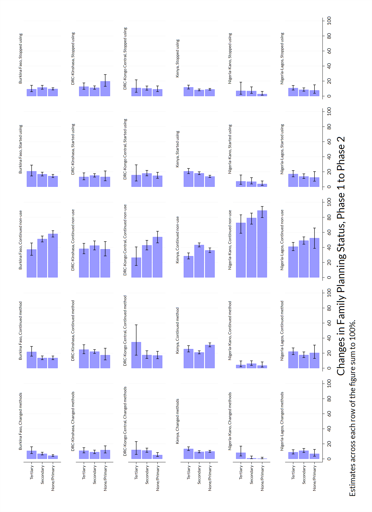
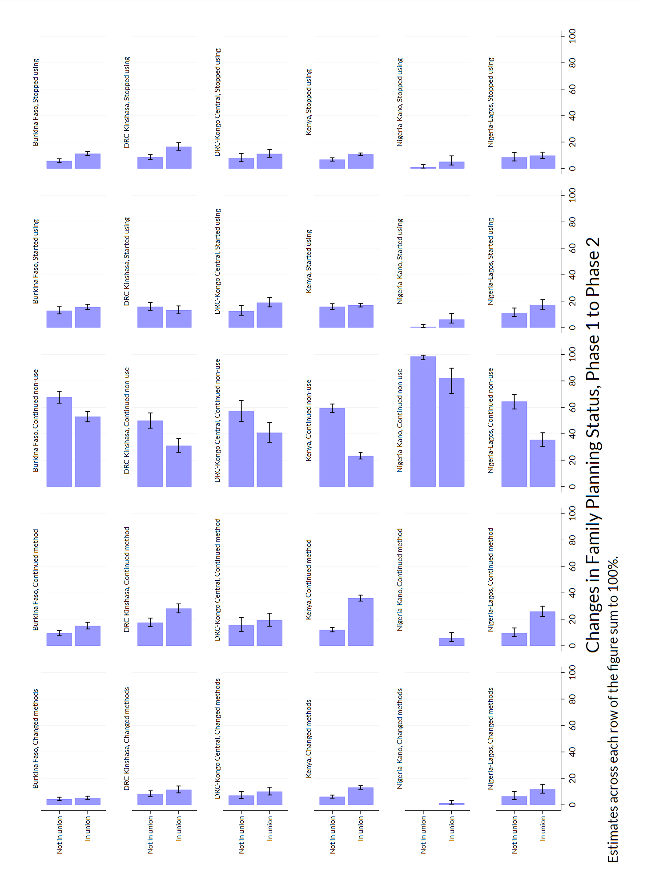

1 Introduction
Performance Monitoring for Action (PMA) uses innovative mobile technology to support low-cost, rapid-turnaround surveys that monitor key health and development indicators.
PMA surveys collect longitudinal data throughout a country at the household and health facility levels by female data collectors, known as resident enumerators, using mobile phones. The survey collects information from the same women and households over time for regular tracking of progress and for understanding the drivers of contraceptive use dynamics. The data are rapidly validated, aggregated, and prepared into tables and graphs, making results quickly available to stakeholders. PMA surveys can be integrated into national monitoring and evaluation systems using a low-cost, rapid-turnaround survey platform that can be adapted and used for various health data needs.
The PMA project is implemented by local partner universities and research organizations who train and deploy the cadres of female resident enumerators.
The purpose of this manual is to provide guidance on the analysis of harmonized longitudinal data for a panel of women age 15-49 surveyed by PMA and published in partnership with IPUMS PMA. IPUMS provides census and survey products from around the world in an integrated format, making it easy to compare data from multiple countries. IPUMS PMA data are available free of charge, subject to terms and conditions: please register here to request access to the data featured in this guide.
This manual provides reproducible coding examples in the statistical software program Stata. You can download .do files containing all of the code needed to reproduce these examples on our GitHub page.
R users: a companion manual for IPUMS PMA longitudinal analysis is also available with coding examples written in R. Additionally, the IPUMS PMA data analysis blog includes an online version of each chapter and posts on a range of other topics updated every two weeks.
1.1 IPUMS PMA data in Stata
The first two chapters of this manual introduce new users to PMA longitudinal data and the IPUMS PMA website, respectively. After demonstrating how to obtain an IPUMS PMA data extract, the remaining chapters feature extensive data analysis examples written in Stata.
To follow along, you’ll need to purchase and download the appropriate version of Stata for your computer’s operating system at stata.com. Discounted licences are available for students and for faculty and staff at participating institutions: learn more here.
For a general introduction to analysis of IPUMS PMA data in Stata, visit the IPUMS PMA Support page, where you’ll find links to video tutorials and data exercises written for Stata users. Similar resources are available for users of R, SPSS, and SAS.
Questions for Dale:
- Did you find that you needed a particular version to complete all of our exercises
- Are any supplementary packages needed?
- In the R version, I list some ways to get help with R. Do you have any favorite resources for getting help with Stata?
1.2 PMA Background
Dating back to 2013, the original PMA survey design included high-frequency, cross-sectional samples of women and service delivery points collected from eleven countries participating in Family Planning 2020 (FP2020) - a global partnership that supports the rights of women and girls to decide for themselves whether, when, and how many children they want to have. These surveys were designed to monitor annual progress towards FP2020 goals via population-level estimates for several core indicators.
Beginning in 2019, PMA surveys were redesigned under a renewed partnership called Family Planning 2030 (FP2030). These new surveys have been refocused on reproductive and sexual health indicators, and they feature a longitudinal panel of women of childbearing age. This design will allow researchers to measure contraceptive dynamics and changes in women’s fertility intentions over a three year period via annual in-person interviews.In addition to these three in-person surveys, PMA also conducted telephone interviews with panel members focused on emerging issues related to the COVID-19 pandemic in 2020. These telephone surveys are already available for several countries - the IPUMS PMA blog series on PMA COVID-19 surveys covers this topic in detail.
Questions on the redesigned survey cover topics like:
- awareness, perception, knowledge, and use of contraceptive methods
- perceived quality and side effects of contraceptive methods among current users
- birth history and fertility intentions
- aspects of health service provision
- domains of empowerment
1.3 Sampling
PMA panel data includes a mixture of nationally representative and sub-nationally representative samples. The panel study consists of three data collection phases, each spaced one year apart.
As of this writing, IPUMS PMA has released data from the first two phases for four countries where Phase 1 data collection began in 2019; IPUMS PMA has released data from only the first phase for three countries where Phase 1 data collection began in August or September 2020. Phase 3 data collection and processing is currently underway.
| Sample | Phase 1 Data Collection* | Phase 1 | Phase 2 | Phase 3 |
|---|---|---|---|---|
| Burkina Faso | Dec 2019 - Mar 2020 | x | x | |
| Cote d’Ivoire | Sep 2020 - Dec 2020 | x | ||
| DRC - Kinshasa | Dec 2019 - Feb 2020 | x | x | |
| DRC - Kongo Central | Dec 2019 - Feb 2020 | x | x | |
| India - Rajasthan | Aug 2020 - Oct 2020 | x | ||
| Kenya | Nov 2019 - Dec 2019 | x | x | |
| Nigeria - Kano | Dec 2019 - Jan 2020 | x | x | |
| Nigeria - Lagos | Dec 2019 - Jan 2020 | x | x | |
| Uganda | Sep 2020 - Oct 2020 | x |
PMA uses a multi-stage clustered sample design, with stratification at the urban-rural level or by sub-region. Sample clusters - called enumeration areas (EAs) – are provided by the national statistics agency in each country.Displaced GPS coordinates for the centroid of each EA are available for most samples by request from PMA. IPUMS PMA provides shapefiles for PMA countries here. These EAs are sampled using a probability proportional to size (PPS) method relative to the population distribution in each stratum.
At Phase 1, 35 household dwellings were selected at random within each EA. Resident enumerators visited each dwelling and invited one household member to complete a Household QuestionnaireQuestionnaires administered in each country may vary from this Core Household Questionnaire - click here for details. that includes a census of all household members and visitors who stayed there during the night before the interview. Female household members and visitors aged 15-49 were then invited to complete a subsequent Phase 1 Female Questionnaire.Questionnaires administered in each country may vary from this Core Female Questionnaire - click here for details.
One year later, resident enumerators visited the same dwellings and administered a Phase 2 Household Questionnaire. A panel member in Phase 2 is any woman still age 15-49 who could be reached for a second Female Questionnaire, either because:
- she still lived there, or
- she had moved elsewhere within the study area,The “study area” is area within which resident enumerators should attempt to find panel women that have moved out of their Phase 1 dwelling. This may extend beyond the woman’s original EA as determined by in-country administrators - see PMA Phase 2 and Phase 3 Survey Protocol for details. but at least one member of the Phase 1 household remained and could help resident enumerators locate her new dwelling.In cases where no Phase 1 household members remained in the dwelling at Phase 2, women from the household are considered lost to follow-up (LTFU). A panel member is also considered LTFU if a Phase 2 Household Questionnaire was not completed, if she declined to participate, or if she was deceased or otherwise unavailable.
Additionally, resident enumerators administered the Phase 2 Female Questionnaire to new women in sampled households who:
- reached age 15 after Phase 1
- joined the household after Phase 1
- declined the Female Questionnaire at Phase 1, but agreed to complete it at Phase 2
When you select the new Longitudinal sample option from IPUMS PMA, you’ll be able to include responses from every available phase of the study. These samples are available in either “long” format (responses from each phase will be organized in separate rows) or “wide” format (responses from each phase will be organized in columns).

In addition to following up with women in the panel over time, PMA also adjusted sampling so that a cross-sectional sample could be produced concurrently with each data collection phase. These samples mainly overlap with the data you’ll obtain for a particular phase in the longitudinal sample, except that replacement households were drawn from each EA where more than 10% of households from the previous phase were no longer there. Conversely, panel members who were located in a new dwelling at Phase 2 will not be represented in the cross-sectional sample drawn from that EA. These adjustments ensure that population-level indicators may be derived from cross-sectional samples in a given year, even if panel members move or are lost to follow-up.
You’ll find PMA cross-sectional samples dating back to 2013 if you select the Cross-sectional sample option from IPUMS PMA.

1.4 Inclusion Criteria for Analysis
Several chapters in this manual feature code you can use to reproduce key indicators included in the PMA Longitudinal Brief for each sample. In many cases, you’ll find separate reports available in English and French, and for both national and sub-national summaries. For reference, here are the highest-level population summaries available in English for each sample where Phase 2 IPUMS PMA data is currently available:
Panel data in these reports is limited to the de facto population of women who completed the Female Questionnaire in both Phase 1 and Phase 2. This includes women who slept in the household during the night before the interview for the Household Questionnaire. The de jure population includes women who are usual household members, but who slept elsewhere that night. We’ll remove de jure cases recorded in the variable resident.
For example, let’s consider a “wide” format data extract containing Phase 1 and Phase 2 respondents to the Female Questionnaire from Burkina Faso. You’ll find the number of women who slept in the household before the Household Questionnaire for each phase reported in resident_1 and resident_2:
use "pma_00126.dta", clear
table ( resident_1 ) () (), nototals missing zerocounts
-----------------------------------------------------------
| Frequency
-----------------------------------------------+-----------
usual member of household |
visitor, slept in hh last night | 106
usual member, did not sleep in hh last night | 174
usual member, slept in hh last night | 6,510
-----------------------------------------------------------This extract includes 174 women who are not members of the de facto population because they did not sleep in the sampled household during the night before the Phase 1 interview.
Let’s turn to Phase 2:
table ( resident_2 ) () (), nototals missing zerocounts-------------------------------------------------------------------------
| Frequency
-------------------------------------------------------------+-----------
usual member of household |
visitor, slept in hh last night | 74
usual member, did not sleep in hh last night | 230
usual member, slept in hh last night | 5,993
slept in hh last night, no response if usually lives in hh | 1
. | 492
-------------------------------------------------------------------------The extract also includes 230 women who are not members of the de facto population because they did not sleep in the sampled household during the night before the Phase 2 interview. Moreover, there are 492 missing values . in resident_2 representing women who were lost to follow-up after Phase 1.
The de facto population is represented in both variables by codes 11 and 22. We will use an if statement or keep statement to include only those cases.
keep if inlist(resident_1,11,22) & inlist(resident_2,11,22)
label variable resident_1 "Resident type - Phase 1"
label variable resident_2 "Resident type - Phase 2"
label define RESIDENT_1 11 "Visitor" 22 "Usual", modify
label define RESIDENT_2 11 "Visitor" 22 "Usual", modify
table ( resident_1 ) ( resident_2 ) (), nototals missing zerocounts----------------------------------------------------
| Resident type - Phase 2
| Visitor Usual
------------------------+---------------------------
Resident type - Phase 1 |
Visitor | 56 39
Usual | 17 5,855
----------------------------------------------------Additionally, PMA reports only include women who completed (or partially completed) both Female Questionnaires. This information is reported in resultfq. In our “wide” extract, this information appears in resultfq_1 and resultfq_2: if you select the “Female Respondents” option at checkout, only women who completed (or partially completed) the Phase 1 Female Questionnaire will be included in your extract.
We’ll further restrict our sample by selecting only cases where resultfq_2 shows that the woman also completed the Phase 2 questionnaire. Notice that, in addition to each of the value 1 through 10, there are several non-response codes numbered 90 through 99. You’ll see similar values repeated across all IPUMS PMA variables, except that they will be left-padded to match the maximum width of a particular variable (e.g. 9999 is used for intfqyear, which represents a 4-digit year for the Female Interview).
use "pma_00126.dta", clear
tab resultfq_2, m result of female questionnaire | Freq. Percent Cum.
----------------------------------------+-----------------------------------
completed | 5,491 80.87 80.87
not at home | 78 1.15 82.02
postponed | 22 0.32 82.34
refused | 66 0.97 83.31
partly completed | 12 0.18 83.49
respondent moved | 15 0.22 83.71
incapacitated | 19 0.28 83.99
not interviewed (female questionnaire) | 4 0.06 84.05
not interviewed (household questionnair | 192 2.83 86.88
niu (not in universe) | 399 5.88 92.75
. | 492 7.25 100.00
----------------------------------------+-----------------------------------
Total | 6,790 100.00label list RESULTFQ_2RESULTFQ_2:
1 completed
2 not at home
3 postponed
4 refused
5 partly completed
6 respondent death
7 respondent moved
8 household moved
10 incapacitated
90 other
95 not interviewed (female questionnaire)
96 not interviewed (household questionnaire)
99 niu (not in universe)
Possible non-response codes include:
95Not interviewed (female questionnaire)96Not interviewed (household questionnaire)97Don’t know98No response or missing99NIU (not in universe)
A missing value . in an IPUMS extract indicates that a particular variable is not provided for a selected sample. In a “wide” Longitudinal extract, it may also signify that a particular person was not included in the data from a particular phase. Here, a missing value . appearing in resultfq_2 indicates that a Female Respondent from Phase 1 was not found in Phase 2.
You can drop incomplete Phase 2 female responses as follows:
use "pma_00126.dta", clear
keep if resultfq_2 == 1tab resultfq_1 resultfq_2,m | result of
| female
| questionna
result of female | ire
questionnaire | completed | Total
----------------------+-----------+----------
completed | 5,487 | 5,487
partly completed | 4 | 4
----------------------+-----------+----------
Total | 5,491 | 5,491 Generally, we will combine both filtering steps together in a single function like so:
use "pma_00126.dta", clear
keep if inlist(resident_1,11,22) & inlist(resident_2,11,22) & resultfq_2 == 1Here, we see that the final analytic sample for Burkina Faso include 5,212 members of the de facto population who completed all or part of the Female Questionnaire in both phases.
tab resultfq_1 resultfq_2,m | result of
| female
| questionna
result of female | ire
questionnaire | completed | Total
----------------------+-----------+----------
completed | 5,208 | 5,208
partly completed | 4 | 4
----------------------+-----------+----------
Total | 5,212 | 5,212
In subsequent analyses, we’ll use each analytic sample to show how PMA generates key indicators for contraceptive use status and family planning intentions and outcomes. The summary report for each country includes measures disaggregated by demographic variables like:
- marstat - marital status
- educatt and educattgen - highest attended level of educationLevels in educatt may vary by country; educattgen recodes country-specific levels in four general categories.
- age - age
- wealthq and wealtht - household wealth quintile or tertileHouseholds are divided into quintiles/tertiles relative to the distribution of an asset score weighted for all sampled households. For subnationally-representative samples (DRC and Nigeria), separate wealth distributions are calculated for each sampled region.
- urban and subnational - geographic locationsubnational includes subnational regions for all sampled countries; country-specific variables are also available on the household - geography page.
1.5 Survey Design Elements
Throughout this guide, we’ll demonstrate how to incorporate PMA sampling weights and information about its stratified cluster sampling procedure into your analysis. This section describes how to use survey weights, cluster IDs, and sample strata in Stata.
Let’s return to the data extract described in the previous section, which includes Phase 1 and Phase 2 respondents to the Female Questionnaire from Burkina Faso. As a reminder: we’ll drop women who are non members of the de facto population and those who did not complete all or part the Female Questionnaire in both phases.
use "pma_00126.dta", clear
keep if inlist(resident_1,11,22) & inlist(resident_2,11,22) & resultfq_2 == 1Whether you intend to work with a new Longitudinal or Cross-sectional data extract, you’ll find the same set of sampling weights available for all PMA Family Planning surveys dating back to 2013:
- hqweight can be used to generate cross-sectional population estimates from questions on the Household Questionnaire.
HQWEIGHTreflects the calculated selection probability for a household in an EA, normalized at the population-level. Users intending to estimate population-level indicators for households should restrict their sample to one person per household via lineno - see household weighting guide for details. - fqweight can be used to to generate cross-sectional population estimates from questions on the Female Questionnaire.
FQWEIGHTadjustsHQWEIGHTfor female non-response within the EA, normalized at the population-level - see female weighting guide for details. - eaweight can be used to compare the selection probability of a particular household with that of its EA.
Additionally, PMA created a new weight, panelweight, which should be used in longitudinal analyses spanning multiple phases, as it adjusts for loss to follow-up.
1.5.1 Set survey design
In the following example, we’ll show how to use survey design information to estimate the proportion of reproductive age women in Burkina Faso who were using contraception at the time of data collection for both Phase 1 and Phase 2. In a cross-sectional or “long” longitudinal extract, you’ll find this information in the variable cp. In the “wide” extract featured here, you’ll find it in cp_1 for Phase 1, and in cp_2 for Phase 2.
table ( cp_1 ) ( cp_2 ) (), nototals missing zerocounts--------------------------------------------------------------
| Contraceptive user (Phase 2)
| no yes
-----------------------------+--------------------------------
Contraceptive user (Phase 1) |
no | 2,589 821
yes | 556 1,241
no response or missing | 5 0
--------------------------------------------------------------To estimate a population percentage, we’ll need to tell Stata that we are working with a sample survey dataset and stipulate the sample design (specify which variables identify survey weights, strata, and clusters). This is accomplished with the svyset command.
We use eaid_1 as the cluster IDBecause women are considered “lost to follow-up” if they moved outside the study area, eaid_1 and eaid_2 are identical for all panel members: you can use either one to identify sample clusters. and strata_1 as the stratum IDAs with eaid, you may use either strata_1 or strata_2 if your analysis is restricted to panel members and panelweight holds the survey weight. We also make a binary variable indicating which women were using contraception in both phases.
gen cp_both = cp_1 == 1 & cp_2 == 1 if cp_1 < 90
label variable cp_both "Contraceptive user (Phases 1 & 2)"
label define cp_both 1 "Yes" 0 "No", replace
label values cp_both cp_both
svyset eaid_1, strata(strata_1) weight(panelweight) Now, we can use this survey design information to obtain a population estimate for the proportion of women who used family planning in both phases.
svy: proportion cp_both(running proportion on estimation sample)
Survey: Proportion estimation
Number of strata = 2 Number of obs = 5,207
Number of PSUs = 167 Population size = 5,215.6413
Design df = 165
--------------------------------------------------------------
| Linearized Logit
| Proportion std. err. [95% conf. interval]
-------------+------------------------------------------------
cp_both |
No | .8122041 .012815 .7855839 .8362084
Yes | .1877959 .012815 .1637916 .2144161
--------------------------------------------------------------This is our first look at Stata’s output for estimating proportions. The top of the output table lists the number of strata and PSUs (enumeration areas) in the dataset, along with the number of respondents in the sample and the sum of their weights (under the heading: Population size). The number of design degrees of freedom (df) is the number of PSUs minus the number of strata.Some survey materials guide analysts to only report results for estimates or tests where the relative standard error (100 x standard error of the estimate / the estimate itself) is no greater than 30% or where there are at least twelve degrees of freedom. See the Centers for Disease Control and Prevention’s NHANES CMS tutorial.︎
The lower portion of the table lists the values of the outcome variable, or in this case their value labels: No and Yes. It lists the proportion of the population that are estimated to have each outcome, that proportion’s standard error, and a two-sided survey-adjusted confidence interval for the proportion. Stata’s default confidence interval is the so-called “logit interval” which is one of several possibilities.For now we will simply say that the default logit interval is a fine choice for most circumstances (see Dean & Pagano [-@Dean-Pagano] for discussion). To request a different kind of confidence interval, read about the options and specify what you want using the citype() option to the svy: proportion command (e.g., citype(wilson) or citype(exact)). If you estimate a proportion where the sample have either 0% or 100% of respondents with the outcome, then as of the time of this writing, neither Stata nor R’s survey package will report a confidence interval. Here at Biostat Global Consulting, we have written programs in both Stata and R that yield meaningful confidence intervals for any proportion. Those programs are made freely available as part of software we have written for the World Health Organization. If you want to learn more about them, write to us at Dale.Rhoda@biostatglobal.com or Caitlin.Clary@biostatglobal.com.
Describing this output, we might say that “based on this survey sample of 5,207 women from Burkina Faso, we estimate that if the surveys were free from bias then about 18.8% women who were eligible to be sampled in the PMA surveys would be self-reported users of contraception in both Phases 1 and 2 (95% CI: 16.4-21.4%).”
1.5.2 Design Effect
With survey data collected from using a complex sample design that employs strata and/or clusters, we sometimes like to report the design effect, which is an index of the statistical precision penalty that we pay for using that sample design. In Stata, we can see the design effect by issuing the following post-estimation command estat effects.
estat effects----------------------------------------------------------
| Linearized
| Proportion std. err. DEFF DEFT
-------------+--------------------------------------------
cp_both |
No | .8122041 .012815 5.6052 2.36753
Yes | .1877959 .012815 5.6052 2.36753
----------------------------------------------------------We see that the design effect DEFF is 5.6, which we might interpret by saying “The confidence interval for this estimation is as wide as we would expect from a simple random sample of this sample size (5,207) divided by 5.6 or about 929 respondents.”
The DEFT is the square root of DEFF and we might use it in a sentence thus: “Because of the complex sample design and heterogeneity of survey weights, the confidence interval for this estimation is 2.4 times wider than we would expect from a simple random sample of size 5,207 respondents.”
The figure 929 is sometimes called the effective sample size.
Let’s take a moment and estimate proportions from two simple random samples where 18.8% of the respondents have the outcome: one where the sample size is 5,207 and one where the sample size is 929. We can do this by generating an empty dataset with the appropriate number of respondents and a binary variable named y.
Here we create y for the larger, complex sample:
clear
set obs 5207
gen y = 0
replace y = 1 if _n < 0.188 * 5207tab y y | Freq. Percent Cum.
------------+-----------------------------------
0 | 4,229 81.22 81.22
1 | 978 18.78 100.00
------------+-----------------------------------
Total | 5,207 100.00svyset _n
svy: proportion ySurvey: Proportion estimation
Number of strata = 1 Number of obs = 5,207
Number of PSUs = 5,207 Population size = 5,207
Design df = 5,206
--------------------------------------------------------------
| Linearized Logit
| Proportion std. err. [95% conf. interval]
-------------+------------------------------------------------
y |
0 | .8121759 .0054131 .8013328 .8225583
1 | .1878241 .0054131 .1774417 .1986672
--------------------------------------------------------------And here we create y for the smaller, simple sample:
clear
set obs 929
gen y = 0
replace y = 1 if _n < 0.188 * 929
tab y y | Freq. Percent Cum.
------------+-----------------------------------
0 | 755 81.27 81.27
1 | 174 18.73 100.00
------------+-----------------------------------
Total | 929 100.00svyset _n
svy: proportion ySurvey: Proportion estimation
Number of strata = 1 Number of obs = 929
Number of PSUs = 929 Population size = 929
Design df = 928
--------------------------------------------------------------
| Linearized Logit
| Proportion std. err. [95% conf. interval]
-------------+------------------------------------------------
y |
0 | .8127018 .0128073 .786262 .8365509
1 | .1872982 .0128073 .1634491 .213738
--------------------------------------------------------------Now let’s compare the CI width from the simple random sample with N=929 with that from the complex sample with N=5,207. That is: we’ll divide the difference between the upper and lower limits of our 95% confidence interval from the complex data by that of the simple random sample. We’ll see that it is approximately equal to DEFT.
di (.2144-.1638) / (.1987-.1774)2.3755869It can be disheartening to know that the teams did all the work to interview 5,207 respondents and yet for this estimation that sample only has the statistical precision of a simple random sample of 929 respondents. The statistical penalty is because of both a clustering effect – spatial heterogeneity in the outcome across PSUs – and because of heterogeneity in the survey weights. In some survey reporting contexts you will be expected to report either DEFF or DEFT, or both. Be clear about which one you are reporting. The design effect will vary across outcomes, across strata, and across PMA Phases, so if it is of interest, estimate it anew for each analysis. You can learn more about the survey design effect in materials on survey sampling statistics.
1.5.3 Sample strata for DRC
This syntax and svyset command worked well for Burkina Faso, but take note: the variable strata is not available for samples collected from DRC - Kinshasa or DRC - Kongo Central. If your extract includes any DRC sample, you’ll need to amend this variable to include a unique numeric code for each of those regions.
For example, let’s look at a different wide extract, containing all of the samples included in this data release. Here, we again include only panel members who completed all or part of the female questionnaire in both phases, and who slept in the household during the night before the interview:
use "pma_00153.dta", clear
keep if inlist(resident_1,11,22) & inlist(resident_2,11,22) & resultfq_2 == 1Notice that strata_1 lists the sample strata for all values of country except for DRC, where the variable is missing.
table ( strata_1 ) if country == 2, nototals missing zerocounts-------------------
| Frequency
-------+-----------
strata |
. | 3,487
-------------------We can replace those values with numeric codes from the variable geocd. These codes (1 and 2) are distinct from all other values in strata_1.
tab geocd, nolabel province, |
congo dr | Freq. Percent Cum.
------------+-----------------------------------
1 | 1,973 56.58 56.58
2 | 1,514 43.42 100.00
------------+-----------------------------------
Total | 3,487 100.00Because these codes are distinct from all other values in strata_1, we can create a new variable strata_recode that copies strata_1 except where geocd is non-missing. In that case, we’ll use the numeric code from geocd.
clonevar strata_recode = strata_1
replace strata_recode = geocd if country == 2
label copy STRATA_1 strata_recode, replace
label define strata_recode 1 "Kinshasa, DRC" 2 "Kongo Central, DRC", modify
label values strata_recode strata_recode
tab strata_recode, m strata | Freq. Percent Cum.
----------------------------------------+-----------------------------------
Kinshasa, DRC | 1,973 11.13 11.13
Kongo Central, DRC | 1,514 8.54 19.67
bungoma - urban, kenya | 153 0.86 20.54
bungoma - rural, kenya | 489 2.76 23.30
kakamega - urban, kenya | 133 0.75 24.05
kakamega - rural, kenya | 438 2.47 26.52
kericho - urban, kenya | 249 1.40 27.92
kericho - rural, kenya | 453 2.56 30.48
kiambu - urban, kenya | 214 1.21 31.69
kiambu - rural, kenya | 311 1.75 33.44
kilifi - urban, kenya | 170 0.96 34.40
kilifi - rural, kenya | 455 2.57 36.97
kitui - urban, kenya | 153 0.86 37.83
kitui - rural, kenya | 586 3.31 41.14
nairobi - urban, kenya | 494 2.79 43.92
nandi - urban, kenya | 260 1.47 45.39
nandi - rural, kenya | 711 4.01 49.40
nyamira - urban, kenya | 143 0.81 50.21
nyamira - rural, kenya | 382 2.16 52.36
siaya - urban, kenya | 130 0.73 53.10
siaya - rural, kenya | 437 2.47 55.56
west pokot - urban, kenya | 104 0.59 56.15
west pokot - rural, kenya | 474 2.67 58.82
lagos, nigeria | 1,088 6.14 64.96
kano - urban | 437 2.47 67.43
kano - rural | 561 3.17 70.59
urban, burkina faso | 3,058 17.25 87.85
rural, burkina faso | 2,154 12.15 100.00
----------------------------------------+-----------------------------------
Total | 17,724 100.00Now, we can use strata_recode with the svyset command to obtain population estimates for each nationally representative or sub-nationally representative sample.
First, we’ll create cp_both again for this wide dataset.
gen cp_both = cp_1 == 1 & cp_2 == 1 if cp_1 < 90
label variable cp_both "Contraceptive user (Phases 1 & 2)"
label define cp_both 1 "Yes" 0 "No", replace
label values cp_both cp_both
svyset eaid_1, strata(strata_recode) weight(panelweight) For Stata to estimate the proportion for each population, we will use the over(varname) option where varname needs to be an integer variable - preferably with a value label.
So, we construct a new variable named pop and give it a unique value for each PMA population.
gen pop = .
replace pop = 1 if country == 1 // Burkina Faso
replace pop = 2 if country == 2 & geocd == 1 // Kinshasa
replace pop = 3 if country == 2 & geocd == 2 // Kongo Central
replace pop = 4 if country == 7 // Kenya
replace pop = 5 if country == 9 & geong == 4 // Kano
replace pop = 6 if country == 9 & geong == 2 // Lagos
label define pop ///
1 "Burkina Faso" ///
2 "DRC-Kinshasa" ///
3 "DRC-Kongo Central" ///
4 "Kenya" ///
5 "Nigeria-Kano" ///
6 "Nigeria-Lagos", replace
label values pop popFinally, we can use the updated survey design information to estimate the proportion of women who were using contraception at both Phase 1 and Phase 2 in every sample (including those from Kinshasa and Kongo Central).
svy : proportion cp_both , over(pop) Survey: Proportion estimation
Number of strata = 28 Number of obs = 17,705
Number of PSUs = 665 Population size = 17,691.26
Design df = 637
------------------------------------------------------------------------
| Linearized Logit
| Proportion std. err. [95% conf. interval]
-----------------------+------------------------------------------------
cp_both@pop |
No Burkina Faso | .8122041 .012815 .785736 .8360846
No DRC-Kinshasa | .6802513 .0163794 .647268 .711525
No DRC-Kongo Central | .7318119 .0287314 .6718062 .7843679
No Kenya | .6342298 .0083126 .6177575 .6503939
No Nigeria-Kano | .9463423 .0130503 .9141428 .9669031
No Nigeria-Lagos | .7065456 .0176703 .6706908 .7400099
Yes Burkina Faso | .1877959 .012815 .1639154 .214264
Yes DRC-Kinshasa | .3197487 .0163794 .288475 .352732
Yes DRC-Kongo Central | .2681881 .0287314 .2156321 .3281938
Yes Kenya | .3657702 .0083126 .3496061 .3822425
Yes Nigeria-Kano | .0536577 .0130503 .0330969 .0858572
Yes Nigeria-Lagos | .2934544 .0176703 .2599901 .3293092
------------------------------------------------------------------------2 Longitudinal Data Extracts
This chapter provides a guided tour of the IPUMS PMA data extract system. While you may also access the original data directly from our partners at PMA, harmonized data from IPUMS have a few additional features. For instance, you can request an extract that:
- includes samples from multiple countries
- includes samples from multiple rounds of data collection
- are formatted in either long or wide format
IPUMS PMA also makes it easy to switch between multiple units of analysis covered in PMA surveys. In addition to the data featured in this guide, you’ll find surveys representing:
- Service Delivery Points (SDPs)
- Client Exit Interviews conducted at SDPs
- Participants in special surveys covering topics like COVID-19, nutrition, and maternal & newborn health
To get started with a longitudinal data extract, you’ll need to select the Family Planning topic under the Person unit of analysis.

2.1 Sample Selection
Once you’ve selected the Family Planning option, you’ll next need to choose between cross-sectional or longitudinal samples. Cross-sectional samples are selected by default; these are nationally or sub-nationally representative samples collected each year dating backward as far as 2013.

Longitudinal samples are only available from 2019 onward, and they include all of the available phases for each sampled country (sub-nationally representative samples for DRC and Nigeria are listed separately). You’ll only find longitudinal samples for countries where Phase 2 data has been made available; Phase 1 data for Cote d’Ivoire, India, and Uganda can currently be found under the Cross-sectional sample menu (Phase 2 data will be released soon!).
Clicking the Longitudinal button reveals options for either long or wide format. You’ll find the same samples available in either case.
Important: if you decide to change formats after selecting variables, your Data Cart will be emptied and you’ll need to begin again from scratch.

After you’ve selected one of the available longitudinal formats, choose one or more samples listed below. There are also several Sample Members options listed.

Female Respondents only includes women who completed all or part of a Female Questionnaire. This option selects all members of the panel study. In addition, it includes women who only participated in only one phase - we will demonstrate how to identify and drop these cases below.Women who completed all or part of the Female Questionnaire in more than one phase of the study are considered panel members. Women who completed it only at Phase 1 are included in a longitudinal extract, but they are not panel members. Likewise, women who completed it for the first time at Phase 2 are included, but are not panel members if they 1) will reach age 50 before Phase 3, or 2) declined the invitation to participate again in Phase 3.
Female Respondents and Female Non-respondents includes all women who were eligible to participate in a Female Questionnaire. Eligible women are those age 15-49 who were listed on the roster collected in a Household Questionnaire. If an eligible woman declined the Female Questionnaire or was not available, variables associated with that questionnaire will be coded “Not interviewed (female questionnaire)”.
Female Respondents and Household Members adds records for all other members of a Female Respondent’s household. These household members did not complete the Female Questionnaire, but were listed on the household roster provided by the respondent to a Household Questionnaire. Basic demographic variables are available for each household member, as are common wealth, water, sanitation, and other variables shared for all members of the same household.
All Cases includes all members listed on the household roster from a Household Questionnaire. If the Household Questionnaire was declined or if no respondent was available, any panel member appearing in other phases of the study will be coded “Not interviewed (household questionnaire)” for variables associated with the missing Household Questionnaire.
After you’ve selected samples and sample members for your extract, click the “Submit Sample Selections” button to return to the main data browsing menu.
2.2 Variable Selection
You can browse IPUMS PMA variables by topic or alphabetically by name, or you can search for a particular term in a variable name, label, value labels, or description.

In this example, we’ll select the Discontinuation of Family Planning topic. The availability of each associated variable is shown in a table containing all of the samples we’ve selected.
Xindicates that the variable is available for all phases/indicates that the variable is available for one phase-indicates that the variable is not available for any phase
You can click the + button to add a variable to your cart, or click a variable name to learn more.

2.2.1 Codes
Let’s take a look at the variable pregnant. You’ll find the variable name and label shown at the top of the page. Below, you’ll see several tabs beginning with the CODES tab. For discrete variables, this tab shows all of the available codes and value labels associated with each response. You’ll also see the same X, /, and - symbols in a table indicating the availability of each response in each sample.

Above, there are no responses for “Not interviewed (female questionnaire)” and “Not interviewed (household questionnaire)”; this is because only samples members included in a “Female Respondents” extract are displayed by default. If we instead choose “All Cases”, this variable will include those response options because we’ll include every person listed on the household roster (even if the Household or Female Questionnaire was not completed).

The symbol / again indicates that a particular response is available for some - but not all - phases of the study. For PREGNANCY it indicates that one of the options was either unavailable or was not selected by any sample respondents in a particular phase. If a variable was not included in all phases of the study, all response options will be marked with this symbol. For example, consider the variable covidconcern, indicating the respondent’s level of concern about becoming infected with COVID-19.

Because Phase 1 questionnaires were administered prior to the emergence of COVID-19, this variable only appeared on Phase 2 questionnaires. The symbol / indicates limited availability across phases.
2.2.2 Variable Description
You’ll find a detailed description for each variable on the DESCRIPTION tab. This tab also indicates whether a particular question appeared on the Household or Female Questionnaire.

2.2.3 Comparability Notes
The COMPARABILITY tab describes important differences between samples. Additionally, it may contain information about similar variables appearing in DHS samples provided by IPUMS DHS.

2.2.4 Sample Universe
The UNIVERSE tab describes selection criteria for this question. In this case, there are some differences between samples:
- In DRC samples, all women aged 15-49 received this question.
- For all other samples, the question was skipped if any such woman previously indicated that she was menopausal or had a hysterectomy.

2.2.5 Availability Across Samples
The AVAILABILITY tab shows all other samples (including cross-sectional samples) where this variable is available.

2.2.6 Questionnaire Text
Finally, you’ll find the full text of each question on the QUESTIONNAIRE TEXT tab. Each phase of the survey is shown separately, and you may click the “view entire document: text” link to view the complete questionnaire for a particular sample in any given phase.

2.2.7 Checkout
Use the buttons at the top of this page to add the variable to your Data Cart, or to “VIEW CART” and begin checkout.

2.3 Data for Stata Users
Your Data Cart shows all of the variables you’ve selected, plus several “preselected” variables that will be automatically included in your extract. Click the “CREATE DATA EXTRACT” button to prepare your download.
Before you submit an extract request, you’ll have the opportunity to choose a “Data Format”. Stata users should select a Stata file (.dta) - you’ll notice that data formatted for R, SPSS, and SAS are also available. CSV files are provided, but not recommended. (If you wish to change Sample Members, you may do so again here.)

Once the Stata option is selected, you may add a description and then proceed to the download page. After a few moments, you’ll receive an email indicating that your extract has been created. Click the green “Download Stata” button to download your extract.

2.4 Long Data Structure
We’ve downloaded a long data extract (Female Respondents only), which we’ll now load into Stata as follows:
use "pma_00119.dta", clearIn a long extract, data from each phase will be organized in separate rows. Here, responses from three panel members are shown:
sort fqinstid phase
list fqinstid phase age panelwoman ///
if strmatch(fqinstid, "011*") | ///
strmatch(fqinstid, "015*"), separator(8) noobs +-------------------------------------------------------+
| fqinstid phase age panelw~n |
|-------------------------------------------------------|
| 011W5S0HN91I4H4I3T9JCMBHB baseline 29 . |
| 011W5S0HN91I4H4I3T9JCMBHB first fo 30 yes |
| 015NP6FJTIA98FYCBBBS1FOF7 baseline 47 . |
| 015NP6FJTIA98FYCBBBS1FOF7 first fo 48 yes |
| 015WYNNO2WXHH6JA4HA9PL1MR baseline 20 . |
| 015WYNNO2WXHH6JA4HA9PL1MR first fo 21 yes |
+-------------------------------------------------------+Each panel member receives a unique ID shown in fqinstid. The variable phase shows that each woman’s responses to the Phase 1 Female Questionnaire appears in the first row, while her Phase 2 responses appear in the second. age shows each woman’s age when she completed the Female Questionnaire for each phase.
panelwoman indicates whether the woman completed all or part of the Female Questionnaire in a prior phase, and that she’d agreed to continue participating in the panel study at that time. The value NA appears in the rows for Phase 1, as panelwoman was not included in Phase 1 surveys.
We mentioned above that you’ll also include responses from some non-panel members when you request an extract with Female Respondents. These include women who did not complete all or part the Female Questionnaire in a prior phase, as indicated by panelwoman. These women are not assigned a value for fqinstid - instead, you’ll find an empty string:
gen non_panel = fqinstid == ""
label define fqinstid_blank 0 "fqinstid is not blank" 1 "fqinstid is blank"
label values non_panel fqinstid_blank
label variable panelwoman "Woman in the panel"
table (phase panelwoman) (non_panel), nototals missing----------------------------------------------------------------------
| non_panel
| fqinstid is not blank fqinstid is blank
--------------------------+-------------------------------------------
longitudinal survey phase |
baseline |
Woman in the panel |
. | 23,591
first follow up |
Woman in the panel |
no | 6,586
yes | 18,194
----------------------------------------------------------------------For most longitudinal analysis applications, you’ll need to drop non-panel members together with any women who did not fully complete the Phase 2 Female Questionnaire. We’ll demonstrate using a combination of bysort and egen to ensure that there is one row for every FQINSTID where PHASE == 1 and another row where PHASE == 2 & RESULTFQ == 1.
gen keep = 1 if phase == 1
replace keep = 1 if phase == 2 & resultfq == 1
bysort fqinstid : egen keep_both = sum(keep)
keep if keep_both == 2
drop keep keep_bothThe PMA Longitudinal Briefs published for each sample also include only members of the de facto population. These are women who slept in the household during the night prior to the interview for each Household Questionnaire, such that resident takes the value 11 or 22. We can use a similar strategy to keep only de facto members who appear in both phases.
gen keep = 1 if phase == 1 & (resident == 11 | resident == 22)
replace keep = 2 if phase == 2 & (resident == 11 | resident == 22)
bysort fqinstid : egen keep_both = sum(keep)
keep if keep_both == 3
drop keep keep_bothFollowing these steps, you can check the size of each analytic sample like so:
gen pop = .
replace pop = 1 if country == 1 // Burkina Faso
replace pop = 2 if country == 2 & geocd == 1 // Kinshasa
replace pop = 3 if country == 2 & geocd == 2 // Kongo Central
replace pop = 4 if country == 7 // Kenya
replace pop = 5 if country == 9 & geong == 4 // Kano
replace pop = 6 if country == 9 & geong == 2 // Lagos
label define pop ///
1 "Burkina Faso" ///
2 "DRC-Kinshasa" ///
3 "DRC-Kongo Central" ///
4 "Kenya" ///
5 "Nigeria-Kano" ///
6 "Nigeria-Lagos", replace
label values pop pop
table ( pop ) ( phase) ( ), nototals missing--------------------------------------------------
| longitudinal survey phase
| baseline first follow up
--------------------+-----------------------------
pop |
Burkina Faso | 5,212 5,212
DRC-Kinshasa | 1,973 1,973
DRC-Kongo Central | 1,514 1,514
Kenya | 6,939 6,939
Nigeria-Kano | 998 998
Nigeria-Lagos | 1,089 1,089
--------------------------------------------------2.5 Wide Data Structure
We’ve also downloaded a wide data extract (Female Respondents only), which we’ll load into Stata like so:
use "pma_00116.dta", clear
In a wide extract, all of the responses from one woman appear in the same row. The IPUMS extract system appends a numeric suffix to each variable name corresponding with the phase from which it was drawn. Consider our three example panel members again:
sort fqinstid
list fqinstid age_1 age_2 panelwoman_1 panelwoman_2 ///
if strmatch(fqinstid, "011*") | ///
strmatch(fqinstid, "015*"), separator(8) noobs +-----------------------------------------------------------------+
| fqinstid age_1 age_2 panelw~1 panelw~2 |
|-----------------------------------------------------------------|
| 011W5S0HN91I4H4I3T9JCMBHB 29 30 . yes |
| 015NP6FJTIA98FYCBBBS1FOF7 47 48 . yes |
| 015WYNNO2WXHH6JA4HA9PL1MR 20 21 . yes |
+-----------------------------------------------------------------+Each panel member has one unique ID shown in fqinstid. However, age is parsed into two columns: AGE_1 shows each woman’s age at Phase 1, and AGE_2 shows her age at Phase 2.
As we’ve discussed, panelwoman is not available for Phase 1, as it indicates whether the woman completed all or part of the Female Questionnaire in a prior phase. For this reason, all values in PANELWOMAN_1 are missing .. Most variables are copied once for each phase, even if they - like PANELWOMAN_1 - are not available for all phases.
You might expect the total length of a wide extract to be half the length of a corresponding long extract. This is not the case! A wide extract includes one row for each woman who completed all or part of the Female Questionnaire for any phase - you’ll find placeholder columns for phases where the interview was not conducted.
list resultfq_1 age_1 resultfq_2 age_2 ///
if fqinstid == "0C8VQU6B03BXLAVVZ8SB90EKQ", noobs +----------------------------------------+
| res~fq_1 age_1 res~fq_2 age_2 |
|----------------------------------------|
| complete 31 not at h not inte |
+----------------------------------------+In a long extract, rows for the missing phase are dropped. In this example, the woman was “not at home” for the Phase 2 Female Questionnaire. When we select a long extract containing only Female Respondents, her Phase 2 row is excluded automatically (it will be included if you request an extract containing Female Respondents and Female Non-respondents).
use "pma_00119.dta", clear
list phase age resultfq ///
if fqinstid == "0C8VQU6B03BXLAVVZ8SB90EKQ", noobs +---------------------------+
| phase age resultfq |
|---------------------------|
| baseline 31 complete |
+---------------------------+Again: for most longitudinal analysis applications, you’ll need to remove cases where women were not interviewed for Phase 1 or where the Phase 2 Female Questionnaire was not completed:
use "pma_00116.dta", clear
keep if resultfq_2 == 1 & resultfq_1 != .The de facto population appearing in PMA Longitudinal Briefs is defined in wide extracts by cases where the values 11 or 12 appear in both RESIDENT_1 and RESIDENT_2:
keep if inlist(resident_1, 11, 22)
keep if inlist(resident_2, 11, 22)Following these steps, each analytic sample contains the same number of cases shown in the final long format extract above.
gen pop = .
replace pop = 1 if country == 1 // Burkina Faso
replace pop = 2 if country == 2 & geocd == 1 // Kinshasa
replace pop = 3 if country == 2 & geocd == 2 // Kongo Central
replace pop = 4 if country == 7 // Kenya
replace pop = 5 if country == 9 & geong == 4 // Kano
replace pop = 6 if country == 9 & geong == 2 // Lagos
label define pop ///
1 "Burkina Faso" ///
2 "DRC-Kinshasa" ///
3 "DRC-Kongo Central" ///
4 "Kenya" ///
5 "Nigeria-Kano" ///
6 "Nigeria-Lagos", replace
label values pop pop
table ( pop ) ( ), nototals missing--------------------------------
| Frequency
--------------------+-----------
pop |
Burkina Faso | 5,212
DRC-Kinshasa | 1,973
DRC-Kongo Central | 1,514
Kenya | 6,939
Nigeria-Kano | 998
Nigeria-Lagos | 1,089
--------------------------------2.6 Which format is best for me?
The choice between long and wide formats ultimately depends on your research objectives.
Many data manipulation tasks, for example, are faster and easier to perform in the wide format. In the example above, we needed to identify women who completed a Female Questionnaire and were members of the de facto population in both phases. In the long format, we first had to use bysort and egen and keep to pare the dataset down to women with good data for both phases.
On the other hand, some of the longitudinal analysis commands require data to be in a long format - this includes both the suite of so-called st commands for time-to-event or survival analysis and the suite of so-called xt commands for analyzing panel data. Users who prefer the wide format for data cleaning and exploration can manually switch to long format with help from Stata’s reshape command, for example:
use "pma_00116.dta", clear
keep if resultfq_2 == 1 & resultfq_1 != .
keep if inlist(resident_1, 11, 22)
keep if inlist(resident_2, 11, 22)
keep fqinstid age_1 pregnant_1 age_2 pregnant_2
reshape long age_ pregnant_ , i(fqinstid) j(phase)(j = 1 2)
Data Wide -> Long
-----------------------------------------------------------------------------
Number of observations 17,725 -> 35,450
Number of variables 5 -> 4
j variable (2 values) -> phase
xij variables:
age_1 age_2 -> age_
pregnant_1 pregnant_2 -> pregnant_
-----------------------------------------------------------------------------rename age_ age
rename pregnant_ pregnantExecuting the reshape command with more variables takes practice, and we imagine many users will find it easier to simply work with data in the long format from the beginning. If you want to become adept at converting between long and wide formats, consult the Stata documentation or watch some of the numerous tutorials on the reshape command available on YouTube.
Fortunately, the updated IPUMS PMA extract system makes it easy to select the samples, sample members, and variables that matter to your particular research question. New choices for long and wide data formats save an additional data cleaning step, allowing you to jump into longitudinal analysis as quickly as possible.
3 Panel Membership
In Chapter 1, we mentioned that PMA uses a multi-stage cluster sample design for each phase of the panel study. This means you’ll find data from a Household Questionnaire administered once each year, and you’ll find data from a subsequent Female Questionnaire collected shortly afterward. Three years - or phases - of data will be collected in total.
Because data are collected through two questionnaires administered in three phases, there are several places where incomplete or missing data may indicate loss to follow-up - dropped cases from the original panel design. At the same time, PMA uses an open panel design, whereby women who move into the study area or reach participation age after Phase 1 are permitted to join the panel at any subsequent phase.
In Chapter 3, we’ll cover these issues in detail. To illustrate, we’ll be using a wide format data extract from IPUMS PMA that includes “All cases” from both currently available phases. In other words, we’ll include every member of the household roster collected in the Household Questionnaire at the start of each phase (even if no Female Questionnaire was completed by that person).
To make our explanation easier to follow, we’ll make use of a data visualization tool known in clinical research settings as a CONSORT diagram. This type of diagram is a flowchart showing enrollment and attrition points, most typically in longitudinal studies. PMA publishes a CONSORT diagram together with the User Notes for each longitudinal sample, which you can find via the links below:
We’ve constructed a single diagram showing all six samples available from IPUMS PMA, and we’ll demonstrate how to identify cases for each level in turn:

3.1 Chapter Setup
This chapter features a wide longitudinal extract with all 6 of the available samples, including “All Cases (Respondents and Non-respondents to Household and Female Questionnaires)”. As mentioned in Chapter 2, both phases are included with each sample when you request a longitudinal extract.

Variables describing sample composition are located under the “Technical” topics heading. Our extract will contain all of the variables in the “Technical Variables” and “Longitudinal Panel” subheadings shown:

Once you’ve finished selecting variables and downloaded an extract, load it into Stata like so:
use "pma_00120.dta", clearWe mentioned in Chapter 1 that variables in a wide extract include a numeric suffix corresponding with a data collection phase. For example, you’ll find two versions of sample: sample_1 contains a numeric code for each Phase 1 sample, while sample_2 contains a numeric code for each Phase 2 sample.
We also mentioned in Chapter 1 that IPUMS PMA combines sub-nationally representative samples for DRC (Kinshasa and Kongo Central) and Nigeria (Kano and Lagos) with one sample code each. Here, we’ll separate those samples and abbreviate country names. Let’s call this variable POP (for “population of interest”).
We’ll combine the country name for each sample together with the DRC and Nigeria regions shown in geocd and geong, respectively.
gen pop = .
replace pop = 1 if country == 1 // Burkina Faso
replace pop = 2 if country == 2 & geocd == 1 // Kinshasa
replace pop = 3 if country == 2 & geocd == 2 // Kongo Central
replace pop = 4 if country == 7 // Kenya
replace pop = 5 if country == 9 & geong == 4 // Kano
replace pop = 6 if country == 9 & geong == 2 // Lagos
label define pop ///
1 "Burkina Faso" ///
2 "DRC-Kinshasa" ///
3 "DRC-Kongo Central" ///
4 "Kenya" ///
5 "Nigeria-Kano" ///
6 "Nigeria-Lagos", replace
label values pop pop
table ( pop ) ( ) ( ), nototals missing--------------------------------
| Frequency
--------------------+-----------
pop |
Burkina Faso | 57,990
DRC-Kinshasa | 20,831
DRC-Kongo Central | 17,625
Kenya | 83,645
Nigeria-Kano | 10,970
Nigeria-Lagos | 11,936
--------------------------------preserve3.2 Phase 1
Phase 1 marks the beginning of the PMA panel study (baseline). As we’ve mentioned, it consists of two separate questionnaires administered in stages: first, resident enumerators visited 35 household dwellings selected at random within each sample cluster, or enumeration area. If a qualifying respondent was available, they were invited to complete a Household QuestionnaireQuestionnaires administered in each country may vary from this Core Household Questionnaire - click here for details. including a census of all household members and visitors who stayed there during the night before the interview. If this census included any women aged 15-49, the enumerator would later return to the household and invite each eligible woman to complete a Female QuestionnaireQuestionnaires administered in each country may vary from this Core Female Questionnaire - click here for details. and participate in the three-year panel study.
We’ll take a look at the inclusion criteria and missing data codes for each questionnaire, in turn.
3.2.1 Household Questionnaire
In our wide data extract, each panelwoman is a woman who completed all or part of the Phase 1 Female Questionnaire and agreed to participate in the longitudinal panel study: as a result, you’ll find all of her Phase 1 responses and her Phase 2 responses together in a single row.
This is not the case for household members who are not, themselves, participants in the panel study. These household members are represented by one row per phase. For example, if a young child was listed on the Phase 1 Household Questionnaire, you’ll find details about their age in agehq_1, their sex in sex_1, and their relationship to the head of household in relate_1. If you look in the same row for corresponding Phase 2 variables (agehq_2, sex_2, and relate_2), you’ll find NA values even if the child still lived in the household at Phase 2: their Phase 2 data may be located in another row (with NA values listed for Phase 1), or it may not exist if the child was not listed on the Phase 2 household roster. It is not possible to link Phase 1 and Phase 2 responses for household members who were not participants in the panel study.
This explains why, for example, you’ll see a large number of NA values in resulthq_1, which gives the result of the Phase 1 Household Questionnaire.
dat %>% count(RESULTHQ_1)Close to half of the values in resulthq_1 are NA: these are household members for whom no linked Phase 2 data exists.
What about the other values in resulthq_1? You’ll notice a range of outcomes including:
1- Completed5- Partly completed- several other codes giving the reason why no household interview occurred
If no household interview occurred, PMA creates one row to represent the household in resulthq_1. Otherwise, if the household roster was completed during the interview, PMA creates one row for each person on the roster.
In order to determine the proportion of households that completed all or part of the Household Questionnaire - or any other household-level statistics - you must count only one row per household. Each Phase 1 household receives a unique identifier in hhid_1 - this value is an empty string "" for household members included only in Phase 2. All Phase 1 households have a unique hhid_1, regardless of the outcome recorded in resulthq_1.
Therefore, you can use group_by to find the resulthq_1 outcome for each household via hhid_1. To obtain the proportion of Phase 1 households that completed all or part of the questionnaire, we’ll first use filter to drop Phase 2 households with the value "". Then, we’ll use slice to include only the first row in each household. Finally, we’ll count the number of fully (code 1) or partly (code 5) completed questionnaires in resulthq_1 - the base R function prop.table derives proportions for these counts.
dat %>%
filter(HHID_1 != "") %>% # drop Phase 2 households
group_by(HHID_1) %>%
slice(1) %>% # include only one row per household
ungroup() %>%
count(RESULTHQ_1 %in% c(1, 5)) %>%
mutate(prop = prop.table(n))It is also often useful to exclude non-interviewed households when calculating person-level statistics. In the first row of our CONSORT diagram above, we drop these households before we count the total number of sampled Phase 1 household members.
dat %>%
filter(RESULTHQ_1 %in% c(1, 5)) %>%
count(POP)3.2.2 Female Questionnaire
IPUMS PMA uses a non-response code labeled “Not interviewed (household questionnaire)” for variables related to questions that were only relevant if the Household Questionnaire was fully or partly completed. This includes eligible_1, which indicates whether a particular household member was a woman aged 15-49 at Phase 1, and therefore eligible for the Phase 1 Female Questionnaire. If the household was not interviewed, eligibility for the Female Questionnaire could not be determined.
dat %>% count(RESULTHQ_1, ELIGIBLE_1)resultlfq_1 shows the result of the Female Questionnaire for eligible women. The non-response code “NIU (not in universe)” is used for household members who were not eligible.
dat %>% count(RESULTFQ_1)You can calculate the proportion of eligible women who completed the Phase 1 Female Questionnaire like so:
dat %>%
filter(ELIGIBLE_1 == 1) %>% # drop if ineligible
count(RESULTFQ_1 %in% c(1, 5)) %>%
mutate(prop = prop.table(n))Our CONSORT diagram shows the total number of women who were eligible to participate in the panel study at Phase 1, after excluding women who:
- were members of a household where no Phase 1 Household Questionnaire was administered
- were not eligible (aged 15-49)
- did not complete at least part of the Phase 1 Female Questionnaire
dat %>%
filter(RESULTFQ_1 %in% c(1, 5)) %>%
count(POP)Enumerators invited these women to participate in Phase 2 of the panel study one year later. Only women who agreed to participate at that time are considered panel members at Phase 2, as shown in panelwoman_2.Women who completed the Phase 1 Female Questionnaire but declined to participate in the panel were given an opportunity to join the panel again at Phase 2 (if eligible). They are not panel members as shown in panelwoman_2, but they may be listed as such in panelwoman_3 if they agree to participation in the panel going forward.
Their responses to the panel invitation are recorded in surveywilling_1. IPUMS PMA uses the non-response code “Not interviewed (female questionnaire)” to indicate women who were eligible, but not interviewed for the Female Questionnaire as shown in resultlfq_1. Additionally, “No response or missing” is used for women who did not respond to the panel invitation.
dat %>%
filter(SURVEYWILLING_1 == 1) %>%
count(POP)Make sure to include “No response or missing” cases in the denominator when calculating the proportion of Phase 1 female respondents who agreed to participate in the panel follow-up:
dat %>%
filter(RESULTFQ_1 %in% c(1, 5)) %>%
count(SURVEYWILLING_1) %>%
mutate(prop = prop.table(n))3.3 Phase 2
Both questionnaires were administered again in Phase 2, approximately one year after Phase 1. Resident enumerators visited the same dwellings where Phase 1 interviews occurred; if the woman’s household had moved elsewhere within the study area,The “study area” is area within which resident enumerators should attempt to find panel women that have moved out of their Phase 1 dwelling. This may extend beyond the woman’s original EA as determined by in-country administrators - see PMA Phase 2 and Phase 3 Survey Protocol for details. enumerators used local contacts to find its new location. If found, they administered a Household Questionnaire including an updated household roster.
As we’ve mentioned, any woman aged 15-49 listed on the Phase 2 household roster was eligible to complete a Phase 2 Female Questionnaire. However, only women who completed all or part of a Phase 1 Female Questionnaire are considered members of the panel in panelwoman_2.
3.3.1 Household Questionnaire
Several variables are available to describe the status of households surveyed at Phase 2. As with Phase 1, resulthq_2 describes the result of the Phase 2 Household Questionnaire.
dat %>% count(RESULTHQ_2)samedwelling_2 indicates whether the Household Questionnaire was administered at the same physical dwelling from Phase 1, or whether the enumerator located the woman’s household in a new dwelling.
dat %>% count(SAMEDWELLING_2)Each Phase 2 sample may also include new households that were not included in Phase 1, as indicated by hhtype_2: these are replacement households drawn for enumeration areas where more than 10% of Phase 1 households were no longer present. They account for all of the non-response code shown in samedwelling_2, as no prior dwelling was sampled.
dat %>% count(SAMEDWELLING_2, HHTYPE_2)As mentioned above, it is not possible to link Phase 1 and Phase 2 records for household members who were not women participating in the panel study. However, the variable hhmemstat_2 does describe whether a Phase 1 household member was listed on the household roster for Phase 2; if not, PMA creates a Phase 2 record for that person indicating whether they moved or were deceased.
dat %>% count(HHMEMSTAT_2)After excluding women who reached age 50 at Phase 2, our CONSORT diagram diverges to show whether panel members were found in their Phase 1 dwelling or a new one. Women whose household was not found in the study area are considered lost to follow-up, as are those where the Phase 2 Household Questionnaire was not completed.
The variable hhpanelp2_2 indicates whether any woman who completed the Phase 1 Female Questionnaire was living in the dwelling at Phase 2. Women who were no longer residents of the household are also considered lost to follow-up.
dat %>% count(HHPANELP2_2)3.3.2 Female Questionnaire
Finally, eligible women who were found in a household at Phase 2 were invited to complete a Female Questionnaire. resultfq_2 indicates the result of the Phase 2 Female Questionnaire both for panel members and women who were otherwise eligible to participate.
dat %>% count(RESULTFQ_2)You can find the proportion of women who completed the Phase 2 Female Questionnaire that were also available at Phase 1 (i.e. panel members) like so:
dat %>%
filter(RESULTFQ_2 == 1) %>%
count(PANELWOMAN_2) %>%
mutate(prop = prop.table(n))Wide data extracts make it particularly easy to combine Phase 1 and Phase 2 variables for the same woman. Note that potential panel members were identified at Phase 1: they are women who agreed to participate in surveywilling_1 and were under age 49 in age_1. In order to calculate the proportion of potential panel members who ultimately completed the Female Questionnaire at Phase 2, you must include Phase 1 female respondents for whom no Phase 2 data exists.
These cases are marked NA in resultfq_2, so they are easily included like so:
dat %>%
filter(SURVEYWILLING_1 == 1 & AGE_1 < 49) %>%
count(RESULTFQ_2 == 1) %>%
mutate(prop = prop.table(n))The final row of our CONSORT diagram shows the total number of completed Phase 2 Female Questionnaires for each sample. The totals below match the results reported in each of the PMA User Guides published for individual samples.
dat %>%
group_by(POP) %>%
filter(SURVEYWILLING_1 == 1 & AGE_1 < 49) %>%
count(final = RESULTFQ_2 == 1) %>%
mutate(prop = prop.table(n)) %>%
filter(final) %>%
select(-final)3.4 Summary
There are ultimately several causes of loss to follow-up that may occur at different time points throughout the panel study. An individual is considered lost to follow-up if:
- The household moved out of the Phase 1 dwelling, and the new dwelling could not be located within the study area
- The Phase 2 Household Questionnaire was not completed (a respondent refused, was not available, etc)
- A panel member from the household was no longer a resident (deceased, moved, or status unknown)
- A panel member did not complete a Phase 2 Household Questionnaire (she refused, was not available, etc)
At the same time, the open panel design allows new participants to complete a Female Questionnaire at any phase. These women are not panel members at Phase 2, but they may become panel members at Phase 3 if they are eligible and agree to complete a forthcoming Phase 3 Female Questionnaire. Women can join the panel at Phase 2, for example, if they:
- Reach age 15 only after Phase 1 interviews were completed
- Move into a household sampled at Phase 2
For more details on sample design, check out the IPUMS PMA sample notes and User Guides published for individual samples at pmadata.org.
4 Family Planning Indicators
In Chapter 4, we’ll demonstrate how to calculate key family planning indicators appearing in the PMA Longitudinal Brief for each of the longitudinal samples currently available from IPUMS PMA. The brief for each sample is linked below.
Indicators calculated in this chapter cover topics like:
- pregnancy intentions and outcomes
- current use of long-acting, short-acting, and traditional contraceptives
- discontinuation of family planning
- intentions for future use of family planning
- unmet need for family planning
- partner’s support for use of family planning
As we demonstrate how to calculate these indicators, we’ll also provide code you can use to check for statistically significant differences between subgroups and plot the results as a bar chart showing a 95% confidence interval for each estimate.
4.1 Chapter Setup
Chapter 4 features a wide longitudinal extract with all 6 of the available samples. Unlike Chapter 3, the data extract used in this chapter includes only Female Respondents.

Using the variable selection process described in Chapter 2, add the following variables to your Data Cart and click the View Cart button to begin checkout (preselected variables are added automatically).
- resultfq - Result of female questionnaire
- panelweight - Phase 2 female panel weight
- resident - Household residence / membership
- age - Age in female questionnaire
- pregnant - Pregnancy status
- birthevent - Number of birth events
- educattgen - Highest level of school attended (4 categories)
- marstat - Marital status
- geocd - Province, DRC
- geong - State, Nigeria
- cp - Contraceptive user
- fpcurreffmethrc - Most effective current FP method
- unmetyn - Total unmet need
- fppartsupport - Husband / partner would be supportive of FP use
- fpplanval - When will start using FP method in the future - value
- fpplanwhen - When will start using FP method in the future - unit
- country - PMA country (preselected)
- eaid - Enumeration area (preselected)
Before completing checkout, make sure that you’ve selected the Stata data format.
Download your data extract and load it into Stata:
use "pma_00121.dta", clear4.2 Survey Design
We’ve mentioned in Chapter 1 that PMA samples are only valid for the de facto population: these are women who slept in the household during the night before the interview for the Household Questionnaire in both phases. These women are coded either 11 or 22 in both RESIDENT_1 and RESIDENT_2. We’ll drop all other women from our extract:
keep if inlist(resident_1,11,22) & inlist(resident_2,11,22)We also mentioned in Chapter 2 that women who completed the Phase 1 Female Questionnaire may have been lost to follow-up at Phase 2. As a reminder, we’ll need to drop any cases where RESULTFQ_2 is not coded 1 for “fully completed”.
keep if resultfq_2 == 1Additionally, a small number of women in each sample elected not to respond to key questions regarding current use of contraceptives, reported in the variable cp. These cases are coded 90 and above, as shown on the cp Codes tab. We’ll exclude those cases, as well.
keep if cp_1 < 90 & cp_2 <90Finally, recall that only the Burkina Faso and Kenya samples are nationally representative. Samples from DRC represent regions identified by geocd, while samples from Nigeria represent regions identified by geong. In order to distinguish each population of interest, we’ll define a custom variable pop that shows each sample’s country label concatenated with each of these regions where appropriate.
gen pop = .
replace pop = 1 if country == 1 // Burkina Faso
replace pop = 2 if country == 2 & geocd == 1 // Kinshasa
replace pop = 3 if country == 2 & geocd == 2 // Kongo Central
replace pop = 4 if country == 7 // Kenya
replace pop = 5 if country == 9 & geong == 4 // Kano
replace pop = 6 if country == 9 & geong == 2 // Lagos
label define pop ///
1 "Burkina Faso" ///
2 "DRC-Kinshasa" ///
3 "DRC-Kongo Central" ///
4 "Kenya" ///
5 "Nigeria-Kano" ///
6 "Nigeria-Lagos", replace
label values pop popThe remaining sample size for each population of interest is simply a count of each level in pop.
table ( pop ) ( ) ( ), nototals missing --------------------------------
| Frequency
--------------------+-----------
pop |
Burkina Faso | 5,207
DRC-Kinshasa | 1,967
DRC-Kongo Central | 1,511
Kenya | 6,934
Nigeria-Kano | 998
Nigeria-Lagos | 1,088
--------------------------------Our data extract includes samples from the DRC - Kinshasa and DRC - Kongo Central, so we’ll use the procedure described in Chapter 1 to create a variable for sample strata called strata_recode. To review: strata_recode uses unique numeric codes from strata_1, except that it also includes unique identifiers for each sampled region in geocd.Because women are considered “lost to follow-up” if they moved outside the study area, strata_1 and strata_2 are identical for all panel members: you can use either one to identify sample clusters.
clonevar strata_recode = strata_1
replace strata_recode = geocd if country == 2
label copy STRATA_1 strata_recode, replace
label define strata_recode 1 "Kinshasa, DRC" 2 "Kongo Central, DRC", modify
label values strata_recode strata_recodeWe’ll now use the svyset command to incorporate survey design information into each of the population estimates calculated throughout this chapter. In addition to strata_recode, this includes survey weights provided by panelweight and sample clusters identified by eaid_1.Because women are considered “lost to follow-up” if they moved outside the study area, eaid_1 and eaid_2 are identical for all panel members: you can use either one to identify sample clusters.
svyset eaid_1, strata(strata_recode) weight(panelweight) 4.3 Population Inference
The svyset command passes the information in panelweight, eaid_1, and pop to other commands that use the svy: prefix, like svy: tab or svy: proportion or svy: mean. We’ll also demonstrate how to use this information in formal significance tests within each sample via svy: tab.
Let’s begin with a simple example. The variable cp indicates whether a woman was currently using any family planning method. The variables cp_1 and cp_2 in our wide extract represent responses collected at Phase 1 and Phase 2, respectively. With help from svyset, we’ll obtain a population-level estimate of the proportion of women who were using a method at Phase 2, given their status at Phase 1.
Below, we use the over(pop) option to divide the data extract into individual samples defined by pop. We then use svy: proportion to generate population estimates obtained from the combined data extract that are identical to those you would obtain if you downloaded one extract for each sample and analyzed them separately.
// Phase 2 status among women not using contraceptives in Phase 1
svy: proportion cp_2 if cp_1 == 0 , over(pop) Survey: Proportion estimation
Number of strata = 6 Number of obs = 10,573
Number of PSUs = 664 Population size = 11,093.988
Design df = 658
------------------------------------------------------------------------
| Linearized Logit
| Proportion std. err. [95% conf. interval]
-----------------------+------------------------------------------------
cp_2@pop |
no Burkina Faso | .7898736 .0132519 .7626719 .8147149
no DRC-Kinshasa | .7392914 .025396 .6864473 .7860059
no DRC-Kongo Central | .7361748 .0243823 .6856104 .781202
no Kenya | .6966579 .0109966 .6746419 .7178072
no Nigeria-Kano | .9456453 .0146418 .9086278 .968191
no Nigeria-Lagos | .7570627 .0205668 .7144437 .7951447
yes Burkina Faso | .2101264 .0132519 .1852851 .2373281
yes DRC-Kinshasa | .2607086 .025396 .2139941 .3135527
yes DRC-Kongo Central | .2638252 .0243823 .218798 .3143896
yes Kenya | .3033421 .0109966 .2821928 .3253581
yes Nigeria-Kano | .0543547 .0146418 .031809 .0913722
yes Nigeria-Lagos | .2429373 .0205668 .2048553 .2855563
------------------------------------------------------------------------// Phase 2 status among women using contraceptives in Phase 1
svy: proportion cp_2 if cp_1 == 1 , over(pop)Survey: Proportion estimation
Number of strata = 6 Number of obs = 7,132
Number of PSUs = 654 Population size = 6,597.2713
Design df = 648
------------------------------------------------------------------------
| Linearized Logit
| Proportion std. err. [95% conf. interval]
-----------------------+------------------------------------------------
cp_2@pop |
no Burkina Faso | .3473058 .0217125 .3059791 .391069
no DRC-Kinshasa | .2747554 .0188858 .2392609 .3133467
no DRC-Kongo Central | .2696023 .0342418 .2078232 .3418219
no Kenya | .1996438 .0086007 .1832896 .2170694
no Nigeria-Kano | .4399902 .0665671 .3161123 .571823
no Nigeria-Lagos | .2397128 .0233586 .1968771 .2885204
yes Burkina Faso | .6526942 .0217125 .608931 .6940209
yes DRC-Kinshasa | .7252446 .0188858 .6866533 .7607391
yes DRC-Kongo Central | .7303977 .0342418 .6581781 .7921768
yes Kenya | .8003562 .0086007 .7829306 .8167104
yes Nigeria-Kano | .5600098 .0665671 .428177 .6838877
yes Nigeria-Lagos | .7602872 .0233586 .7114796 .8031229
------------------------------------------------------------------------The population estimate for each row appears in the column Proportion. Looking at row 1 in the first table, we would estimate that 79% of women aged 15-49 in Burkina Faso used no method both at Phase 1 and again at Phase 2. The columns below [95% conf. interval] list the limits of a two-sided 95% Logit confidence interval: 76.3% and 81.5%.
Note that each population appears twice in each table: in the top half of the table we see the estimated proportion who were not using contraception in Phase 2, and in the bottom half we see the complementary proportions – those who were using contraception in Phase 2. Each proportion in the top half corresponds to a proportion in the bottom half, and each pair sums to 1.0 (or 100%). For example, the 79% of women in Burkina Faso shown in row 1 of the first table sums with 21% in row 7 to equal 100%.
Because these tables include complementary proportions, it is not necessary to plot both the top and bottom half of each table. Instead, we’ll use negative space to help the reader visualize complementary proportions in a grouped bar chart.
4.3.1 Data Visualization
We’ll use simple grouped bar charts to show population estimates for each proportion calculated throughout the remainder of this chapter. We’ll also include error bars representing a 95% confidence interval for each proportion.
For example, let’s consider how to visualize the two tables produced by svy: proportion in the previous section. It is possible to make a barchart in Stata starting with what we might call raw data in memory using the graph bar command. It may be combined with aweight and by and over options to include a weighted sub-graph for each country and each level of Phase 1 contraception use. But it will not show confidence intervals, so in this chapter we take a different approach and use the more versatile graph twoway family of commands to build up the figure that we want. Specifically, we use twoway bar twoway rcap to plot bars and confidence intervals, respectively.
But for graph twoway we cannot plot directly from the raw data. We need to construct a new dataset with one row per bar in the bar chart that stores the survey estimated proportions and confidence interval limits or bounds. There are two ways to construct that dataset: a) using stored output from commands like those shown in the previous section,In addition to display in the Stata log window, the table of results obtained above is stored by Stata for optional downstream use. The .do-file that accompanies this book includes code to access the results and wrangle them into a dataset to use for plotting. (The results are stored as a matrix that may be brought into memory, but needs to be transposed and needs to have several ID variables re-instated before it is ready for plotting, so there are several data management steps involved.) or b) by writing a short program to construct the dataset row-by-row.
Throughout this chapter, we use the second approach as shown below. Here we construct the plotting dataset, one country at a time, one dataset row at a time, and focusing only on the proportion of women who were using contraception in Phase 2. We accomplish this with a program that uses nested for-loops and the svy: proportion command to calculate the estimate and confidence interval for each bar in our chart and, while those coordinates are in memory, uses the post command to write them to a new dataset.
First, we prepare to capture the summary dataset as postout.
capture postclose toplot
tempfile postout
postfile toplot cp_1 cp_2 pop estimate lcb ucb using `postout', replaceThen, we loop through each value of cp_1 (i) for each pop (j). Within each loop, we extract the estimates from column 2 of r(table) because we are summarizing the proportion who were using contraception in Phase 2, which means we want to know the proportion of “yes” responses (1) in cp_2.
forvalues i = 0/1 {
forvalues j = 1/6 {
svy, subpop(if cp_1 == `i' & pop == `j') : proportion cp_2
post toplot (`i') (1) (`j') ///
(`=100*r(table)[1,2]') /// // the estimate
(`=100*r(table)[5,2]') /// // the LCB
(`=100*r(table)[6,2]') // the UCB
}
}
capture postclose toplot
use `postout', clear
label define yesno 0 "No" 1 "Yes", replace
label define pop 1 "Burkina Faso" 2 "DRC-Kinshasa" 3 "DRC-Kongo Central" ///
4 "Kenya" 5 "Nigeria-Kano" 6 "Nigeria-Lagos", replace
label values cp_1 yesno
label values cp_2 yesno
label values pop pop
label variable cp_1 "Contraceptive user (Phase 1)"
label variable cp_2 "Contraceptive user (Phase 2)"Next we use Stata’s twoway command to make a grouped bar chart, with mostly default aesthetic options.
* Basic graph
twoway (bar estimate cp_1, horizontal ///
ylabel(0(1)1, valuelabel ) ///
xlabel(0(20)100)) ///
(rcap lcb ucb cp_1 , horizontal ) ///
, by(pop, legend(off) ) ///
xtitle(Contraceptive user (Phase 2) (%))
And finally, we incorporate some additional syntax to bring more aspects of the aesthetics under our control:
* Additional aesthetic options
twoway (bar estimate cp_1 if cp_1 == 1 & cp_2 == 1, ///
color(blue*.5) horizontal ylabel(0(1)1,valuelabel angle(0) nogrid) ///
xlabel(0(20)100)) ///
(bar estimate cp_1 if cp_1 == 0 & cp_2 == 1, ///
color(orange*.5) horizontal) ///
(rcap lcb ucb cp_1 if cp_2 == 1, horizontal lcolor(black)) ///
, by(pop, graphregion(color(white)) legend(off) note("")) ///
subtitle(,lcolor(white) fcolor(white)) ///
xtitle(Contraceptive user (Phase 2) (%)) ///
xline(20 40 60 80 100, lcolor(gs15) lwidth(vthin)) ///
name(nicer1, replace)
4.3.2 Significance Test
Comparing confidence intervals in the bar chart shown above gives us an informal, conservative way to test for a significant difference between outcomes for each pop: because none of the confidence intervals overlap within any given population, we can be at least 95% confident that the proportion of Phase 2 contraceptive users is not identical for Phase 1 users compared with Phase 1 non-users.
Formal testing may also reveal significant differences between pairs of outcomes where these intervals overlap slightly. Our approach is well suited for data visualization, but it should not replace formal testing. Fortunately, you can adapt our code to replace (or complement) the output from svy: proportion.
For example, we’ll now use a Rao-Scott chi-square test for significant differences between the estimated population proportions for Burkina Faso and the proportions we would expect to observe if Phase 2 outcomes were statistically independent from Phase 1 conditions.See Stata help for svy: tab and the references there for more information.
svy, subpop(if pop == 1): tab cp_1 cp_2 , row ci nomarginals pearson nullNumber of strata = 1 Number of obs = 5,207
Number of PSUs = 167 Population size = 5,215.6413
Subpop. no. obs = 5,207
Subpop. size = 5,215.6413
Design df = 166
----------------------------------------
Contracep |
tive user | Contraceptive user (Phase 2)
(Phase 1) | no yes
----------+-----------------------------
no | .7899 .2101
| [.7625,.8148] [.1852,.2375]
|
yes | .3473 .6527
| [.3058,.3913] [.6087,.6942]
----------------------------------------
Key: Row proportion
[95% confidence interval for row proportion]
Pearson:
Uncorrected chi2(1) = 934.8348
D-B (null) F(1, 166) = 305.9783 P = 0.0000
Design-based F(1, 166) = 472.5643 P = 0.0000
Note: 5 strata omitted because they contain no subpopulation members.The p-value for the Rao-Scott test is in the row of output labeled D-B (null) (where the null hypothesis is that the proportions are equal to the product of the marginal probabilities). We see a p-value of 0.0000, so we reject the null hypothesis that the proportion of Phase 2 contraceptive users might be the same regardless of contraceptive use at Phase 1.
You can perform a separate test for each pop by constructing a for-loop like the one shown below. This will generate one table for each population in pop (results omitted for space constraints).
forvalues i = 1/6 {
di "Study Population: `: label pop `i''"
svy, subpop(if pop == `i'): tab cp_1 cp_2 , row ci nomarginals pearson null
}Suppose instead that we wanted to know whether a significant difference exists between Phase 1 users in Burkina Faso compared with those from DRC-Kongo. It’s hard to tell from our bar chart whether the confidence intervals overlap in this case, but we can easily adapt our Rao-Scott test to check for a difference between populations.
svy: tab cp_2 pop if inlist(pop,1,3) & cp_1 == 1, null pearson colNumber of strata = 2 Number of obs = 2,412
Number of PSUs = 223 Population size = 2,054.7818
Design df = 221
----------------------------------------
Contracep |
tive user | pop
(Phase 2) | Burkina DRC-Kong Total
----------+-----------------------------
no | .3473 .2696 .3264
yes | .6527 .7304 .6736
|
Total | 1 1 1
----------------------------------------
Key: Column proportion
Pearson:
Uncorrected chi2(1) = 13.0465
D-B (null) F(1, 221) = 3.3293 P = 0.0694
Design-based F(1, 221) = 3.4134 P = 0.0660This time, the value in D-B (null) is 0.0694, so we fail to reject the null hypothesis. The likelihood that a difference exists between Phase 1 users in Burkina Faso and DRC-Kongo is less than 95%.
4.4 Contraceptive Use or Non-Use
Let’s continue our examination of cp. In the PMA reports for each sample linked above, you’ll notice that women who were pregnant at either phase are distinguished from women who reported use or non-use in CP_1 or CP_2. We’ll identify these women in the variable pregnant, and then we’ll create a combined indicator called fpstatus.
fpstatus- Pregnant, using contraception, or using no contraception
We’ll create fpstatus_1 to incorporate pregnancy information into the contraceptive use status of women at Phase 1, and fpstatus_2 at Phase 2.
gen fpstatus_1 = 1 if pregnant_1 == 1
replace fpstatus_1 = 3 if pregnant_1 != 1 & cp_1 == 1
replace fpstatus_1 = 2 if pregnant_1 != 1 & cp_1 == 0
gen fpstatus_2 = 1 if pregnant_2 == 1
replace fpstatus_2 = 3 if pregnant_2 != 1 & cp_2 == 1
replace fpstatus_2 = 2 if pregnant_2 != 1 & cp_2 == 0
label define status 1 "Pregnant" 3 "Using FP" 2 "Not Using FP"
label values fpstatus_1 status
label values fpstatus_2 statusExamining the first dozen rows of the dataset below, we see that fpstatus is “Pregnant” for pregnant women, and indicates contraceptive use otherwise.
list pregnant_1 cp_1 fpstatus_1 pregnant_2 cp_2 fpstatus_2 in 1/12, noobs sep(12) +-----------------------------------------------------------------+
| pregna~1 cp_1 fpstatus_1 pregna~2 cp_2 fpstatus_2 |
|-----------------------------------------------------------------|
| no no Not Using FP no yes Using FP |
| yes no Pregnant no yes Using FP |
| no no Not Using FP no no Not Using FP |
| no yes Using FP no no Not Using FP |
| no no Not Using FP no no Not Using FP |
| no no Not Using FP no no Not Using FP |
| no no Not Using FP no no Not Using FP |
| no no Not Using FP no no Not Using FP |
| no yes Using FP no yes Using FP |
| no no Not Using FP no yes Using FP |
| no yes Using FP no yes Using FP |
| no yes Using FP no no Not Using FP |
+-----------------------------------------------------------------+
We’ll now use these new variables to address questions like:
- Are women who were pregnant at Phase 1 more likely to use or not use family planning at Phase 2?
- Are women who were using (or not using) contraception at Phase 1 likely to maintain the same status at Phase 2?
We can modify the earlier approach to building a dataset for making a grouped bar chart. First, we prepare a new dataset postout.
capture postclose toplot
tempfile postout
postfile toplot fpstatus_1 fpstatus_2 pop estimate lcb ucb using `postout', replace
forvalues i = 1/3 {
forvalues k = 1/3 {
forvalues j = 1/6 {
capture drop y
gen y = fpstatus_2 == `k'
svy, subpop(if fpstatus_1 == `i' & pop == `j'): proportion y
post toplot (`i') (`k') (`j') ///
(`=100*r(table)[1,2]') /// // the estimate
(`=100*r(table)[5,2]') /// // the LCB
(`=100*r(table)[6,2]') // the UCB
}
}
}
capture postclose toplot
use `postout', clear
label define status 1 "Pregnant" 3 "Using FP" 2 "Not Using FP"
label values fpstatus_1 status
label values fpstatus_2 status
label define pop 1 "Burkina Faso" 2 "DRC-Kinshasa" 3 "DRC-Kongo Central" ///
4 "Kenya" 5 "Nigeria-Kano" 6 "Nigeria-Lagos", replace
label values pop pop
label variable fpstatus_1 "Family Planning Status (Phase 1)"
label variable fpstatus_2 "Family Planning Status (Phase 2)"And next, we build a bar chart with customized aesthetic options.
label define status2 1 "Pregnant in Phase 1" 3 "Using FP in Phase 1" 2 "Not Using FP in Phase 1", replace
label values fpstatus_1 status2
twoway (bar estimate fpstatus_2 if fpstatus_2 == fpstatus_1, ///
color(blue*.5) horizontal ///
ylabel(1(1)3,valuelabel angle(0) nogrid) ///
xlabel(0(20)100)) ///
(bar estimate fpstatus_2 if fpstatus_2 != fpstatus_1, ///
color(orange*.5) horizontal) ///
(rcap lcb ucb fpstatus_2 , horizontal lcolor(black)) ///
, by(pop fpstatus_1, graphregion(color(white)) ///
note("") col(3) ) ///
subtitle(,lcolor(white) fcolor(white)) ///
xtitle(Family Planning Status (Phase 2)) ///
xline(20 40 60 80 100, lcolor(gs15) lwidth(vthin)) ///
legend(order(1 "No change" 2 "Status changed") size(vsmall) ///
region(lcolor(white)) symxsize(small) symysize(small)) ///
ytitle("") 
To reiterate: comparing the error bars within each of these 18 panels gives us a informal, but conservative test for significant difference. We’ll say that a significant difference occurs where two pairs of error bars do not overlap (but additional testing may be necessary to determine whether a significant difference occurs where error bars overlap only slightly). A few observations:
- For women who were pregnant at Phase 1, there is usually no apparent difference between using and not using family planning at Phase 2. Kenya and Nigeria - Kano are the exception: in Kenya, pregnant women at Phase 1 were appear more likely to be using FP at Phase 2, while the opposite is true in Kano.
- Overall, non-pregnant women at Phase 1 appeared more likely to maintain the same status (use or non-use) at Phase 2 than they were to switch or become pregnant.
4.5 Contraceptive Method Type
PMA surveys also ask contraceptive users to indicate which method they are currently using at each phase of the study. If a woman reports using more than one method, fpcurreffmeth shows her most effective currently used method. These responses are combined with detailed information about use of the lactational amenorrhea method (LAM), emergency contraception, or injectable type in fpcurreffmethrc. PMA reports use fpcurreffmethrc to determine whether each woman’s most effective current method is a short-acting, long-acting, or traditional method.
Long-acting methods include:
- IUDs
- implants
- male sterilization
- female sterilization
Short-acting methods include:
- injectables (intramuscular and subcutaneous)
- the pill
- emergency contraception
- male condoms
- female condoms
- LAM
- diaphragm
- foam/jelly
- standard days method
Traditional methods include:
- rhythm
- withdrawal
- other traditional
These methods are coded sequentially by group in fpcurreffmethrc. Women who are “NIU (not in universe)” were using no method.
table ( fpcurreffmethrc_1 ) ( ) ( ), nototals missing----------------------------------------------------------------
| Frequency
----------------------------------------------------+-----------
most effective current fp method (numeric, recoded) |
female sterilization | 198
male sterilization | 1
implants | 2,248
iud | 226
injectables (3 months) | 1,412
injectables (sayana press) | 296
pill | 547
emergency contraception | 243
male condom | 791
female condom | 1
diaphragm | 1
foam | 1
standard days/cycle beads method | 70
lactational amenorrhea method (lam) | 24
rhythm | 569
withdrawal | 351
other traditional | 153
no response or missing | 1
niu (not in universe) | 10,572
----------------------------------------------------------------We’ll recode the Phase 1 and Phase 2 versions of fpcurreffmethrc into three groups representing short-acting, long-acting, and traditional methods.
* Generate new variables to recode the methods to 3 categories
label define fpmethod 4 "Long-acting" 3 "Short-acting" 2 "Traditional" 1 "None", replace
foreach v in fpcurreffmethrc_1 fpcurreffmethrc_2 {
gen cat_`v' = 4 if `v' < 120
replace cat_`v' = 3 if `v' >= 120 & `v' < 200
replace cat_`v' = 2 if `v' >= 200 & `v' < 900
replace cat_`v' = 1 if cat_`v' == .
label values cat_`v' fpmethod
}Next, we’ll generate population estimates for our recoded variables.
capture postclose toplot
tempfile postout
postfile toplot methcat_1 methcat_2 pop estimate lcb ucb using `postout', replace
forvalues i = 1/4 {
forvalues k = 1/4 {
forvalues j = 1/6 {
capture drop y
gen y = cat_fpcurreffmethrc_2 == `k'
svy, subpop(if cat_fpcurreffmethrc_1 == `i' & pop == `j'): proportion y
svy: proportion y if cat_fpcurreffmethrc_1 == `i' & pop == `j'
post toplot (`i') (`k') (`j') ///
(`=100*r(table)[1,2]') /// // the estimate
(`=100*r(table)[5,2]') /// // the LCB
(`=100*r(table)[6,2]') // the UCB
}
}
}
capture postclose toplot
use `postout', clear
label define fpmethod 4 "Long-acting" 3 "Short-acting" 2 "Traditional" 1 "None", replace
label values methcat_1 fpmethod
label values methcat_2 fpmethod
label define pop 1 "Burkina Faso" 2 "DRC-Kinshasa" 3 "DRC-Kongo Central" ///
4 "Kenya" 5 "Nigeria-Kano" 6 "Nigeria-Lagos", replace
label values pop pop
label variable methcat_1 "Family Planning Method (Phase 1)"
label variable methcat_2 "Family Planning Method (Phase 2)"And finally, we plot the results.
twoway (bar estimate methcat_2 if methcat_1 == methcat_2, ///
color(blue*.5) horizontal ///
ylabel(1(1)4,valuelabel angle(0) nogrid labsize(small)) ///
xlabel(0(20)100)) ///
(bar estimate methcat_2 if methcat_1 != methcat_2, ///
color(orange*.5) horizontal) ///
(rcap lcb ucb methcat_2 , horizontal lcolor(black)) ///
, by(pop (methcat_1), graphregion(color(white)) ///
note(Graphs by population and Phase 1 method, size(vsmall)) col(4)) ///
subtitle(,size(small) lcolor(white) fcolor(white)) ///
xtitle(Family Planning Method (Phase 2), size(small)) ///
xline(20 40 60 80 100, lcolor(gs15) lwidth(vthin)) ///
legend(order(1 "No change" 2 "Method changed") size(vsmall) ///
region(lcolor(white)) symxsize(small) symysize(small)) ///
ytitle("")
What do we learn from this bar chart? Let’s consider each column in turn:
- Users of “long-acting” methods at Phase 1 appear more likely to have used “long-acting” methods at Phase 2 than to have changed status (except perhaps in Kano, where the intervals for “long-acting” and “none” overlap at Phase 2).
- Users of “short-acting” methods at Phase 1 appeared generally likely to use them again at Phase 2, but some samples show that women are equally likely to be using “none” at Phase 2. A difference between these two outcomes is visually apparent only in Kinshasa, Kenya, and Lagos (where women were more likely to be using “short-acting” methods than “none”).
- The status of Phase 1 “traditional” users is generally unclear at Phase 2. In Kinshasa, Kongo Central, and Lagos, these women seem most likely to remain “traditional” users at Phase 2. Elsewhere, there are no clear trends.
- Users of “none” at Phase 1 were clearly most likely to remain as such at Phase 2.
4.6 Contraceptive Dynamics by Subgroup
We can also use fpcurreffmethrc to see whether women switched methods, stopped using any method, started using any method, or made no changes. Let’s summarize this information as chg_fpcurr:
chg_fpcurr- Change in contraceptive use between Phase 1 and Phase 2
gen chg_fpcurr = .
replace chg_fpcurr = 1 if fpcurreffmethrc_1 < 900 & ///
fpcurreffmethrc_2 < 900 & ///
fpcurreffmethrc_1 != fpcurreffmethrc_2
replace chg_fpcurr = 2 if fpcurreffmethrc_1 < 900 & ///
fpcurreffmethrc_2 < 900 & ///
fpcurreffmethrc_1 == fpcurreffmethrc_2
replace chg_fpcurr = 3 if fpcurreffmethrc_1 > 900 & fpcurreffmethrc_2 > 900
replace chg_fpcurr = 4 if fpcurreffmethrc_1 > 900 & fpcurreffmethrc_2 < 900
replace chg_fpcurr = 5 if fpcurreffmethrc_1 < 900 & fpcurreffmethrc_2 > 900
label define chg_fpcurr 1 "Changed methods" 2 "Continued method" ///
3 "Continued non-use" 4 "Started using" 5 "Stopped using", replace
label values chg_fpcurr chg_fpcurr
label var chg_fpcurr = "Phase 1 to 2 Family Planning Change Status"PMA reports disaggregate the outcomes captured in chg_fpcurr by age, marital status, education level, and parity (number of live childbirths).
4.6.1 Age
We’ll use PMA’s categorization of age_2 to examine differences between women in three categories in cat_age_2.
gen cat_age_2 = .
replace cat_age_2 = 1 if age_2 < 20
replace cat_age_2 = 2 if age_2 >= 20 & age_2 < 25
replace cat_age_2 = 3 if age_2 >= 25
label define cat_age_2 1 "15-19" 2 "20-24" 3 "25-49", replace
label values cat_age_2 cat_age_2
label var cat_age_2 "Age category at Phase 2"
capture postclose toplot
tempfile postout
postfile toplot cat_age_2 chg_fpcurr pop estimate lcb ucb using `postout', replace
forvalues i = 1/3 {
forvalues k = 1/5 {
forvalues j = 1/6 {
capture drop y
gen y = chg_fpcurr == `k'
svy, subpop(if cat_age_2 == `i' & pop == `j'): proportion y
post toplot (`i') (`k') (`j') ///
(`=100*r(table)[1,2]') /// // the estimate
(`=100*r(table)[5,2]') /// // the LCB
(`=100*r(table)[6,2]') // the UCB
}
}
}
capture postclose toplot
use `postout', clear
label define cat_age_2 1 "15-19" 2 "20-24" 3 "25-49", replace
label define chg_fpcurr 1 "Changed methods" 2 "Continued method" ///
3 "Continued non-use" 4 "Started using" 5 "Stopped using", replace
label values cat_age_2 cat_age_2
label values chg_fpcurr chg_fpcurr
label define pop 1 "Burkina Faso" 2 "DRC-Kinshasa" 3 "DRC-Kongo Central" ///
4 "Kenya" 5 "Nigeria-Kano" 6 "Nigeria-Lagos", replace
label values pop pop
label var chg_fpcurr = "Phase 1 to 2 Family Planning Change Status"Plotting cat_age_2 on the y-axis allows us to compare confidence intervals across age groups. For example, notice that women aged 15-19 in every population seem more likely to continue non-use than women who are aged 20-24 or 25-49 (column 3).
twoway (bar estimate cat_age_2 , ///
color(blue*.5) horizontal barwidth(0.9) ///
ylabel(1(1)3,valuelabel angle(0) nogrid labsize(small)) ///
xlabel(0(20)100)) ///
(rcap lcb ucb cat_age_2 , horizontal lcolor(black)) ///
, by(pop chg_fpcurr, graphregion(color(white)) ///
note("") col(5) legend(off) ) ///
subtitle(,size(small) lcolor(white) fcolor(white)) ///
xtitle("Changes in Family Planning Status, Phase 1 to Phase 2", size(small)) ///
xline(20 40 60 80 100, lcolor(gs15) lwidth(vthin)) ///
ytitle("")
4.6.2 Education level
The variable educattgen standardizes educational categories across countries.See educatt for country-specific codes. To match PMA reports, we’ll recode educattgen into just three groups in cat_educattgen_2.
gen cat_educattgen_2 = .
replace cat_educattgen_2 = 1 if educattgen_2 < 3
replace cat_educattgen_2 = 2 if educattgen_2 == 3
replace cat_educattgen_2 = 3 if educattgen_2 == 4
label define cat_educattgen_2 1 "None/Primary" 2 "Secondary" 3 "Tertiary", replace
label values cat_educattgen_2 cat_educattgen_2
label var cat_educattgen_2 "Education Category at Phase 2"
capture postclose toplot
tempfile postout
postfile toplot cat_educattgen_2 chg_fpcurr pop estimate lcb ucb using `postout', replace
forvalues i = 1/3 {
forvalues k = 1/5 {
forvalues j = 1/6 {
capture drop y
gen y = chg_fpcurr == `k'
svy, subpop(if cat_educattgen_2 == `i' & pop == `j'): proportion y
post toplot (`i') (`k') (`j') ///
(`=100*r(table)[1,2]') /// // the estimate
(`=100*r(table)[5,2]') /// // the LCB
(`=100*r(table)[6,2]') // the UCB
}
}
}
capture postclose toplot
use `postout', clear
label define cat_educattgen_2 1 "None/Primary" 2 "Secondary" 3 "Tertiary", replace
label define chg_fpcurr 1 "Changed methods" 2 "Continued method" ///
3 "Continued non-use" 4 "Started using" 5 "Stopped using", replace
label values cat_educattgen_2 cat_educattgen_2
label values chg_fpcurr chg_fpcurr
label define pop 1 "Burkina Faso" 2 "DRC-Kinshasa" 3 "DRC-Kongo Central" ///
4 "Kenya" 5 "Nigeria-Kano" 6 "Nigeria-Lagos", replace
label values pop pop
label var chg_fpcurr = "Phase 1 to 2 Family Planning Change Status"As with age, we’ll plot cat_educattgen_2 on the y-axis. There aren’t many clear takeaways here: confidence intervals overlap in each column for almost every education level, so visual inspection reveals no clear significant differences.
twoway (bar estimate cat_educattgen_2 , ///
color(blue*.5) horizontal barwidth(0.9) ///
ylabel(1(1)3,valuelabel angle(0) nogrid labsize(small)) ///
xlabel(0(20)100)) ///
(rcap lcb ucb cat_educattgen_2 , horizontal lcolor(black)) ///
, by(pop chg_fpcurr, graphregion(color(white)) ///
note("") col(5) legend(off) ) ///
subtitle(,size(small) lcolor(white) fcolor(white)) ///
xtitle("Changes in Family Planning Status, Phase 1 to Phase 2", size(small)) ///
xline(20 40 60 80 100, lcolor(gs15) lwidth(vthin)) ///
ytitle("")
In Nigeria-Lagos, the confidence intervals for Secondary and Tertiary overlap, but not by much, so it may be interesting to examine the outcome of a formal Rao-Scott chi-square test.
capture drop y
gen y = chg_fpcurr == 3
svy, subpop(if inlist(cat_educattgen_2,2,3) & pop == 6): ///
tab cat_educattgen_2 y if cat_educattgen_2 > 1 , row pearson null ci(running tabulate on estimation sample)
Number of strata = 1 Number of obs = 970
Number of PSUs = 51 Population size = 957.828852
Subpop. no. obs = 970
Subpop. size = 957.828852
Design df = 50
-------------------------------------------------------
Education |
Category |
at Phase | y
2 | 0 1 Total
----------+--------------------------------------------
Secondar | .5088 .4912 1
| [.4601,.5573] [.4427,.5399]
|
Tertiary | .5892 .4108 1
| [.5331,.6431] [.3569,.4669]
|
Total | .5434 .4566 1
| [.5058,.5805] [.4195,.4942]
-------------------------------------------------------
Key: Row proportion
[95% confidence interval for row proportion]
Pearson:
Uncorrected chi2(1) = 6.1953
D-B (null) F(1, 50) = 5.3040 P = 0.0255
Design-based F(1, 50) = 5.3259 P = 0.0252
Note: 5 strata omitted because they contain no subpopulation members.This is an example where even though the confidence intervals overlap, the chi-square test rejects the null hypothesis that the proportion of respondents who continued non-use is equal in the secondary versus tertiary category in Lagos, with a p-value of 0.0255.
4.6.3 Marital status
The variable marstat indicates each woman’s marital / partnership status. PMA considers women “in union” to be those who are currently married (code 21) or currently living with their partner (code 22). Otherwise, women who were never married, divorced / separated, or widowed are considered “not in union”. We’ll assign these values to cat_marstat_2.
gen cat_marstat_2 = .
replace cat_marstat_2 = 1 if marstat_2 == 21 | marstat_2 == 22
replace cat_marstat_2 = 2 if cat_marstat_2 != 1
label define cat_marstat_2 1 "In union" 2 "Not in union", replace
label values cat_marstat_2 cat_marstat_2
label variable cat_marstat_2 "Marital status at Phase 2"
capture postclose toplot
tempfile postout
postfile toplot cat_marstat_2 chg_fpcurr pop estimate lcb ucb using `postout', replace
forvalues i = 1/2 {
forvalues k = 1/5 {
forvalues j = 1/6 {
capture drop y
gen y = chg_fpcurr == `k'
svy, subpop(if cat_marstat_2 == `i' & pop == `j'): proportion y
post toplot (`i') (`k') (`j') ///
(`=100*r(table)[1,2]') /// // the estimate
(`=100*r(table)[5,2]') /// // the LCB
(`=100*r(table)[6,2]') // the UCB
}
}
}
capture postclose toplot
use `postout', clear
label define cat_marstat_2 1 "In union" 2 "Not in union", replace
label define chg_fpcurr 1 "Changed methods" 2 "Continued method" ///
3 "Continued non-use" 4 "Started using" 5 "Stopped using", replace
label values cat_marstat_2 cat_marstat_2
label values chg_fpcurr chg_fpcurr
label define pop 1 "Burkina Faso" 2 "DRC-Kinshasa" 3 "DRC-Kongo Central" ///
4 "Kenya" 5 "Nigeria-Kano" 6 "Nigeria-Lagos", replace
label values pop pop
label var chg_fpcurr "Phase 1 to 2 Family Planning Change Status"Here, we see that women who were not in a union at Phase 2 were significantly more likely to continue non-use of contraception compared to married / partnered women in each population. On the other hand, women who were in a union mainly appeared more likely to continue using the same method, or perhaps to change methods (most clearly in Kenya).
twoway (bar estimate cat_marstat_2 , ///
color(blue*.5) horizontal barwidth(0.9) ///
ylabel(1(1)2,valuelabel angle(0) nogrid labsize(small)) ///
xlabel(0(20)100)) ///
(rcap lcb ucb cat_marstat_2 , horizontal lcolor(black)) ///
, by(pop chg_fpcurr, graphregion(color(white)) ///
note("Estimates across each row of the figure sum to 100%.", ///
size(vsmall)) col(5) legend(off)) ///
subtitle(,size(small) lcolor(white) fcolor(white)) ///
xtitle("Changes in Family Planning Status, Phase 1 to Phase 2", size(small)) ///
xline(20 40 60 80 100, lcolor(gs15) lwidth(vthin)) ///
ytitle("")
4.6.4 Parity
Parity refers to the number of times a women has given live birth (excluding stillbirths). This information is recorded in the IPUMS variable birthevent, in which the values 0 and 99 (not in universe) can both be interpreted as “none”. We’ll create cat_birthevent_2 for Phase 2 parity in four groups.
gen cat_birthevent_2 = .
replace cat_birthevent_2 = 1 if inlist(birthevent_2,0,99)
replace cat_birthevent_2 = 2 if inlist(birthevent_2,1,2)
replace cat_birthevent_2 = 3 if inlist(birthevent_2,3,4)
replace cat_birthevent_2 = 4 if birthevent_2 >= 5 & birthevent_2 < 90
label define cat_birthevent_2 1 "None" 2 "One-two" 3 "Three-four" 4 "Five +", replace
label values cat_birthevent_2 cat_birthevent_2
label var cat_birthevent_2 "Parity (number of live births) at Phase 2"
capture postclose toplot
tempfile postout
postfile toplot cat_birthevent_2 chg_fpcurr pop estimate lcb ucb using `postout', replace
forvalues i = 1/4 {
forvalues k = 1/5 {
forvalues j = 1/6 {
capture drop y
gen y = chg_fpcurr == `k'
svy, subpop(if cat_birthevent_2 == `i' & pop == `j'): proportion y
post toplot (`i') (`k') (`j') ///
(`=100*r(table)[1,2]') /// // the estimate
(`=100*r(table)[5,2]') /// // the LCB
(`=100*r(table)[6,2]') // the UCB
}
}
}
capture postclose toplot
use `postout', clear
label define cat_birthevent_2 1 "None" 2 "One-two" 3 "Three-four" 4 "Five +", replace
label define chg_fpcurr 1 "Changed methods" 2 "Continued method" ///
3 "Continued non-use" 4 "Started using" 5 "Stopped using", replace
label values cat_birthevent_2 cat_birthevent_2
label values chg_fpcurr chg_fpcurr
label define pop 1 "Burkina Faso" 2 "DRC-Kinshasa" 3 "DRC-Kongo Central" ///
4 "Kenya" 5 "Nigeria-Kano" 6 "Nigeria-Lagos", replace
label values pop pop
label var chg_fpcurr "Phase 1 to 2 Family Planning Change Status"There are few clear patterns related to parity, except that women who have never given birth are also more likely to continue non-use of contraception between phases.
twoway (bar estimate cat_birthevent_2 , ///
color(blue*.5) horizontal barwidth(0.9) ///
ylabel(1(1)4,valuelabel angle(0) nogrid labsize(small)) ///
xlabel(0(20)100)) ///
(rcap lcb ucb cat_birthevent_2 , horizontal lcolor(black)) ///
, by(pop chg_fpcurr, graphregion(color(white)) ///
note("Estimates across each row of the figure sum to 100%.", ///
size(vsmall)) col(5) legend(off) ) ///
subtitle(,size(small) lcolor(white) fcolor(white)) ///
xtitle("Changes in Family Planning Status, Phase 1 to Phase 2", size(small)) ///
xline(20 40 60 80 100, lcolor(gs15) lwidth(vthin)) ///
ytitle("")
4.7 Outcomes for Phase 1 Non-users
The final page in each PMA report covers family planning dynamics related to unmet need, partner support, and plans for future use of family planning methods. In each case, we’ll be focusing on women who were not using any method at Phase 1. We’ll show how each of these dynamics impacts the likelihood that Phase 1 non-users would have adopted any family planning method at Phase 2.
4.7.1 Unmet need
PMA defines unmet need for family planning according to each woman’s fertility preferences, current use of family planning methods, and risk factors for pregnancy. Women may have “unmet need” for birth spacing (e.g. pregnant women whose pregnancy was mistimed) or for limiting births (e.g. pregnant women whose pregnancy was unwanted), while women are considered “not at risk” if they are not sexually active or cannot become pregnant.
The variable unmetneed provides detailed information on types of need for each woman, and on related variables that were used to calculate unmet need. The binary variable unmetyn recodes unmetneed as either “Unmet need”, or “No unmet need”.
keep if cp_1 == 0
capture postclose toplot
tempfile postout
postfile toplot unmetyn_1 pop estimate lcb ucb using `postout', replace
forvalues i = 0/1 {
forvalues j = 1/6 {
capture drop y
gen y = cp_2 == 1
svy, subpop(if unmetyn_1 == `i' & pop == `j'): proportion y
post toplot (`i') (`j') ///
(`=100*r(table)[1,2]') /// // the estimate
(`=100*r(table)[5,2]') /// // the LCB
(`=100*r(table)[6,2]') // the UCB
}
}
capture postclose toplot
use `postout', clear
label define unmetyn_1 0 "No" 1 "Yes", replace
label values unmetyn_1 unmetyn_1
label define pop 1 "Burkina Faso" 2 "DRC-Kinshasa" 3 "DRC-Kongo Central" ///
4 "Kenya" 5 "Nigeria-Kano" 6 "Nigeria-Lagos", replace
label values pop popOverall, our bar chart suggests that non-users with unmet need for family planning at Phase 1 were more likely to adopt a method at Phase 2 compared to non-users who had none (e.g. women who were not sexually active, could not become pregnant, etc.). However, formal testing is needed to determine whether these trends were statistically significant in Burkina Faso and Nigeria - Kano.
twoway (bar estimate unmetyn_1 , ///
color(blue*.5) horizontal barwidth(0.9) ///
ylabel(0(1)1,valuelabel angle(0) nogrid labsize(small)) ///
xlabel(0(20)100)) ///
(rcap lcb ucb unmetyn_1 , horizontal lcolor(black)) ///
, by(pop , graphregion(color(white)) ///
note("Among women who were not using family planning in Phase 1.", ///
size(vsmall)) col(1) legend(off) ) ///
subtitle(,size(small) lcolor(white) fcolor(white)) ///
xtitle("Had adopted a method of family planning in Phase 2", size(small)) ///
xline(20 40 60 80 100, lcolor(gs15) lwidth(vthin)) ///
ytitle("Had unmet need in Phase 1") ///
ysize(10) xsize(8)Here, we conduct a Rao-Scott chi-square test for Burkina Faso:
* Women who didn't use any method at Phase 1
keep if cp_1 == 0
* Outcome is women using contraception in Phase 2
gen y = cp_2 == 1
label variable y "Using contraception in Phase 2"
label variable unmetyn_1 "Unmet Need in Phase 1"
* Test for difference in Burkina Faso
svy, subpop(if pop == 1 ): tab unmetyn_1 y, row pearson null ci(running tabulate on estimation sample)
Number of strata = 1 Number of obs = 3,410
Number of PSUs = 167 Population size = 3,714.9751
Subpop. no. obs = 3,410
Subpop. size = 3,714.9751
Design df = 166
-------------------------------------------------------
Unmet |
Need in | Using contraception in Phase 2
Phase 1 | 0 1 Total
----------+--------------------------------------------
no unmet | .8056 .1944 1
| [.7743,.8334] [.1666,.2257]
|
unmet ne | .752 .248 1
| [.7125,.7878] [.2122,.2875]
|
Total | .7899 .2101 1
| [.7625,.8148] [.1852,.2375]
-------------------------------------------------------
Key: Row proportion
[95% confidence interval for row proportion]
Pearson:
Uncorrected chi2(1) = 12.2006
D-B (null) F(1, 166) = 7.0687 P = 0.0086
Design-based F(1, 166) = 7.4473 P = 0.0070
Note: 5 strata omitted because they contain no subpopulation members.And here, we conduct a Rao-Scott chi-square test for Nigeria-Kano:
* Test for difference in Nigeria-Kano
svy, subpop(if pop == 5 ): tab unmetyn_1 y, row pearson null ci(running tabulate on estimation sample)
Number of strata = 1 Number of obs = 881
Number of PSUs = 25 Population size = 901.912
Subpop. no. obs = 881
Subpop. size = 901.912
Design df = 24
-------------------------------------------------------
Unmet |
Need in | Using contraception in Phase 2
Phase 1 | 0 1 Total
----------+--------------------------------------------
no unmet | .9613 .0387 1
| [.9294,.9791] [.0209,.0706]
|
unmet ne | .894 .106 1
| [.7569,.9581] [.0419,.2431]
|
Total | .9456 .0544 1
| [.9062,.9691] [.0309,.0938]
-------------------------------------------------------
Key: Row proportion
[95% confidence interval for row proportion]
Pearson:
Uncorrected chi2(1) = 13.8741
D-B (null) F(1, 24) = 2.8789 P = 0.1027
Design-based F(1, 24) = 5.8252 P = 0.0238
Note: 5 strata omitted because they contain no subpopulation members.The output indicates that the difference is statistically significant in Burkina Faso (p=0.0086) and is not significant in Kano (p=0.1027).
4.7.2 Partner support
Women who were not using family planning and not pregnant at Phase 1 were asked whether they thought their husband / partner would be supportive of use of family planning in the future. These results are recorded in fppartsupport. In addition to women who were already using a method at Phase 1, we’ll also exclude non-partnered women here, as they are “NIU (not in universe)”.
keep if cp_1 == 0 & inlist(fppartsupport_1,0,1,97)We’ll recode the value 97 (“Do not know”) in fppartsupport_1 to the unused value of 2 because the value will also serve as the y-coordinate when we make the figure, and values of 0, 1, and 2 will be spaced in a more eye-pleasing manner than 0, 1, and 97.
replace fppartsupport_1 = 2 if fppartsupport_1 == 97
capture postclose toplot
tempfile postout
postfile toplot fppartsupport_1 pop estimate lcb ucb using `postout', replace
forvalues i = 0/2 {
forvalues j = 1/6 {
capture drop y
gen y = cp_2 == 1
svy, subpop(if fppartsupport_1 == `i' & pop == `j'): proportion y
post toplot (`i') (`j') ///
(`=100*r(table)[1,2]') /// // the estimate
(`=100*r(table)[5,2]') /// // the LCB
(`=100*r(table)[6,2]') // the UCB
}
}
capture postclose toplot
use `postout', clear
label define fppartsupport_1 0 "No" 1 "Yes" 2 `"Do not know"', replace
label values fppartsupport_1 fppartsupport_1
label define pop 1 "Burkina Faso" 2 "DRC-Kinshasa" 3 "DRC-Kongo Central" ///
4 "Kenya" 5 "Nigeria-Kano" 6 "Nigeria-Lagos", replace
label values pop popIn our bar chart, Phase 2 adoption outcomes for women who answered “Do not know” are not visually distinct from those who answered “Yes” or “No”. Formal testing is needed to determine whether any significant differences exist.
Setting aside women who answered “Do not know”, women with Phase 1 partner support in DRC - Kongo Central and Kenya (“Yes”) were more likely to adopt a method than those without (“No”). Outcomes for women in other populations are not visibly different based on partner support, one way or the other (again, formal testing may prove otherwise).
twoway (bar estimate fppartsupport_1 , ///
color(blue*.5) horizontal barwidth(0.9) ///
ylabel(0(1)2,valuelabel angle(0) nogrid labsize(small)) ///
xlabel(0(20)100)) ///
(rcap lcb ucb fppartsupport_1 , horizontal lcolor(black)) ///
, by(pop , graphregion(color(white)) ///
note("Among women who were not using family planning in Phase 1.", ///
size(vsmall)) col(1) legend(off) ) ///
subtitle(,size(small) lcolor(white) fcolor(white)) ///
xtitle("Had adopted a method of family planning in Phase 2", size(small)) ///
xline(20 40 60 80 100, lcolor(gs15) lwidth(vthin)) ///
ytitle("Partner supportive of family planning in Phase 1") ///
ysize(10) xsize(8)4.7.3 Intentions
Lastly, we’ll demonstrate the impact of women’s plans for future family planning use at Phase 1. The variable fpusplan indicates whether women had plans for future use at any point in the future, but here we’ll consider whether women had plans to adopt a method within the next year to correspond with the timing of Phase 2 surveys.
There are two variables that describe the approximate time when women said they would adopt a family planning method (if at all). fpplanval contains a raw number that should be matched with a unit of time (months, years) or a categorical response (“soon / now”, “after the birth of this child”) in fpplanwhen. We’ll create fpplanyr_1 to indicate whether each woman planned to use family planning within a year’s time at Phase 1.
keep if cp_1 == 0
gen fpplanyr_1 = (fpplanval_1 <= 12 & fpplanwhen_1 == 1) | ///
(fpplanval_1 == 1 & fpplanwhen_1 == 2) | ///
inlist(fpplanwhen_1,3,4)
label define fpplanyr_1 0 "No" 1 "Yes", replace
label values fpplanyr_1 fpplanyr_1
label var fpplanyr_1 "Plan to start using family planning within 1 year at Phase 1"
capture postclose toplot
tempfile postout
postfile toplot fpplanyr_1 pop estimate lcb ucb using `postout', replace
forvalues i = 0/1 {
forvalues j = 1/6 {
capture drop y
gen y = cp_2 == 1
svy, subpop(if fpplanyr_1 == `i' & pop == `j'): proportion y
post toplot (`i') (`j') ///
(`=100*r(table)[1,2]') /// // the estimate
(`=100*r(table)[5,2]') /// // the LCB
(`=100*r(table)[6,2]') // the UCB
}
}
capture postclose toplot
use `postout', clear
label define fpplanyr_1 0 "No" 1 "Yes", replace
label values fpplanyr_1 fpplanyr_1
label define pop 1 "Burkina Faso" 2 "DRC-Kinshasa" 3 "DRC-Kongo Central" ///
4 "Kenya" 5 "Nigeria-Kano" 6 "Nigeria-Lagos", replace
label values pop popIn every population, Phase 1 non-users who planned to adopt a method by Phase 2 were significantly more likely to do so. However, only in Kenya do we see a significant majority of Phase 1 non-users with plans to adopt a method actually doing so, where the 95% confidence interval for “Yes” responses includes only proportions greater than the 50% threshold. In fact, women who adopted a method at Phase 2 represent a significant minority of Phase 1 non-users who planned to do so in Burkina Faso, DRC - Kongo Central, and Nigeria - Kano; in those populations, the entire 95% confidence interval falls below the 50% mark.
twoway (bar estimate fpplanyr_1 , ///
color(blue*.5) horizontal barwidth(0.9) ///
ylabel(0(1)1,valuelabel angle(0) nogrid labsize(small)) ///
xlabel(0(20)100)) ///
(rcap lcb ucb fpplanyr_1 , horizontal lcolor(black)) ///
, by(pop , graphregion(color(white)) ///
note("Among women who were not using family planning in Phase 1.", ///
size(vsmall)) col(1) legend(off) ) ///
subtitle(,size(small) lcolor(white) fcolor(white)) ///
xtitle("Had adopted a method of family planning in Phase 2", size(small)) ///
xline(20 40 60 80 100, lcolor(gs15) lwidth(vthin)) ///
ytitle("Respondent plans to adopt a FP method within a year at Phase 1") ///
ysize(10) xsize(8)